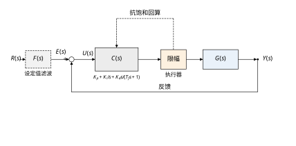
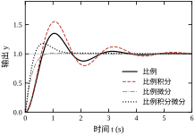
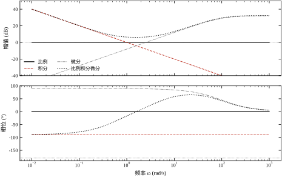
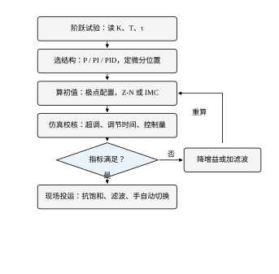
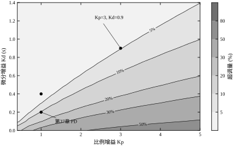
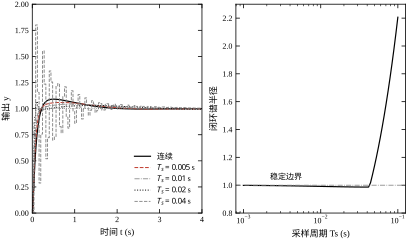
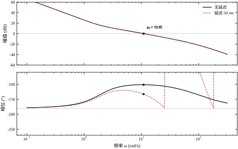
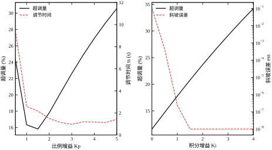
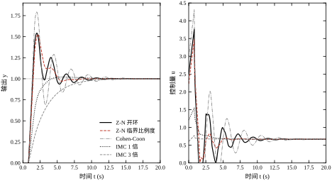
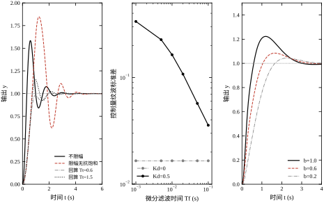

PID 是工业现场出现频率最高的四个字母。化工、冶金、造纸、机床、无人机、家电，凡是要让某个量“跟上给定值”的场合，默认方案几乎都是比例—积分—微分。它不依赖精确模型，参数有明确的物理含义，失效时还能退化成手动，这三点使它历经八十年仍然是控制工程师的第一门手艺。
但“最常用”与“最容易”是两回事。现场大量回路长期投在手动，或者投自动后指标勉强及格，原因往往不是 PID 结构不够好，而是三项作用各自的代价没有被算清楚：加大比例换来了快速，也换来了超调；加上积分消掉了残差，也埋下了饱和与慢振荡；加上微分压住了超调，也把噪声请进了执行器。本章的任务，是把这三笔交易逐项算给读者看。
为了让所有数字可核对，本章沿用第 37 章的伺服对象，即
G_0(s)=\frac{10}{s(s+2)} \tag{44-1}
它与第 37 章 §37.4 使用的是同一个传递函数，因此本章的 PD 结果可以与第 37 章的 PD 基线逐项对照。对象本身含一个积分环节，纯比例控制下阶跃无静差，但斜坡跟踪有差——这一点恰好是理解积分作用的入口。
某包装线的送料轴要求跟随一条匀速位移曲线，工艺给两条硬指标：等速段的跟踪误差不超过 0.05，起停段的超调不超过 5%。工程师先按经验取纯比例 K_p=1，仿真给出超调 35.09%、上升时间 0.425 s、调节时间 3.537 s；曲线在目标值上方冲出一个大包，起停时工件明显前窜。把增益降到 K_p=0.5，超调降到 20.79%，但上升时间退化到 0.689 s，更关键的是等速段跟踪误差从 0.20000 增大到 0.40000，直接超标八倍。
于是加微分。K_p=1、K_d=0.4 时超调降到 1.51%，调节时间从 3.537 s 缩到 0.662 s，起停段的问题解决了。但等速段的 0.20000 误差一分没少，因为微分只在误差变化时出力，对恒速跟踪的固定偏差无能为力。最后加积分，K_p=1、K_i=0.1、K_d=0.4 把斜坡误差压到 0.02700 量级，代价是超调从 1.51% 回升到 2.38%、调节时间从 0.662 s 拉长到 1.488 s。
这个“加一点、退一点”的过程，就是整定。它没有唯一的正确答案，只有在给定对象、给定指标、给定执行器能力下的一份折中方案。
把这段过程拆开，可以看到三个不同的约束在互相拉扯。跟踪精度要求控制器在等速段持续输出一个与速度成正比的量，这只能靠积分；起停平稳要求控制器在误差反向前提前减速，这只能靠微分；节拍要求整段过程在 0.8 s 内完成，这要求比例增益足够大。三个要求分别指向三个参数，而三个参数又共同决定同一个闭环特征多项式，所以它们不可能各自独立满足。现场工程师说的“调一个动三个”，指的就是这件事。
比例项看“现在”：误差有多大，就按比例出多大力。积分项看“过去”：误差存在了多久、累积了多少，就补多少，直到残差被磨平。微分项看“将来”：误差正在以多快的速度扩大，就提前反向刹车，防止冲过头。三句话对应三种数学操作：乘以常数、对时间积分、对时间求导。
频域里这三句话更清楚。比例环节在全频段幅值为常数、相位为零；积分环节幅值随频率下降、斜率为 -20 dB/dec，相位恒为 -90^\circ；理想微分环节幅值随频率上升、斜率为 +20 dB/dec，相位恒为 +90^\circ。在 \omega=1 rad/s 处实测：K_p=1 的纯比例环节 |C|=1.0000、相位 0^\circ；K_i=1 的纯积分环节 |C|=1.0000、相位 -90.00^\circ；K_d=0.4 的带滤波微分环节 |C|=0.4000、相位 89.43^\circ；三者合成的 PID（2/1/0.4）在该频率处 |C|=2.0919、相位 -16.67^\circ。微分环节的相位不到 90^\circ，是因为一阶滤波在 1 rad/s 处已经开始衰减。
三项作用可以线性叠加，前提是系统始终在线性区。一旦执行器饱和，叠加关系失效：比例项还在按误差出力，积分项还在累积，微分项还在放大噪声，三者叠加后的输出被限幅削平，实际作用到对象上的只剩限幅值。这时讨论“哪一项起了多大作用”没有意义，因为三项都被同一个非线性环节截断。§44.9 的抗饱和，本质上是让积分项知道“输出已经被截断”，从而停止无效累积。
图 44-1 给出本章讨论的闭环结构。与教科书结构相比多了两处工程细节：控制器输出后的限幅环节，以及从限幅偏差引回积分器的抗饱和支路。这两处在 §44.9 会展开，先记住它们的位置。

图 44-2 把 P、PI、PD、PID 四种组合的阶跃响应画在同一张图上。四条曲线的差别不是“谁更先进”，而是“三种代价如何分配”：P 最快但冲得最高，PI 消差但拖尾，PD 平稳但留差，PID 兼顾但三者互相牵制。

表 44-1 把三项作用的时域效果、频域特征与主要副作用列在一起。这张表是本章后续所有讨论的索引：凡是调参中遇到的问题，都能在其中找到对应的那一行。
| 作用 | 时域直觉 | 频域特征 | 主要收益 | 主要代价 |
|---|---|---|---|---|
| 比例 K_p | 按当前误差出力 | 全频段 0 dB、0^\circ | 加快响应、提高刚度 | 超调增大、控制量峰值大 |
| 积分 K_i | 按误差累积出力 | -20 dB/dec、-90^\circ | 消除阶跃/斜坡残差 | 相位滞后、饱和、慢振荡 |
| 微分 K_d | 按误差变化率出力 | +20 dB/dec、+90^\circ | 增加阻尼、抑制超调 | 放大噪声、对延迟敏感 |
第一条原因是鲁棒。PID 不要求知道对象的阶次与参数，只要求对象大致单调、延迟不大。第 37 章已经说明，绝大多数工业对象在主导极点近似下都能退化成“一阶加延迟”或“二阶加延迟”，而 PID 对这两类对象的适应能力足够覆盖大部分工况。
第二条原因是可解释。K_p 调大响应变快、K_i 调大残差变小、K_d 调大超调变小，这三条定性规律在现场几乎不会失效。工程师不必打开仿真软件，凭曲线形状就能判断该动哪个旋钮。这种可解释性在故障排查时的价值，往往超过几个百分点的性能优势。
第三条原因是可降级。PID 结构天然支持手自动无扰切换：手动时把积分器钳在跟踪值上，切回自动时输出连续，不会打执行器。相比之下，基于模型的方法一旦模型失配或优化器不收敛，往往只能整体切手动。
从历史看，PID 的普及也不是因为它最优，而是因为它最早被做成了标准仪表。气动时代把比例、积分、微分做成三个可更换的波纹管，电子时代做成三个电位器，DCS 时代做成三个可组态的系数。每一次技术换代都保留了这三个旋钮，工程师的习惯也随之固化。今天即使有了更先进的方法，现场仍然倾向于“先用 PID 兜底”，因为它的行为可预期、故障可降级、交接有共同语言。
但“默认”绝不等于“随便调”。同一套 PID，参数差三倍，超调可以从 1.51% 变成 84.73%（§44.9 的限幅对比），执行器寿命可以差一个数量级。本章后面十节，讲的都是如何把这三个旋钮拧到该在的位置。
本章按“原理—设计—连续—离散—稳定—参数—整定—改进—落地—边界—代码”推进。§44.2 给出 PID 的时域与频域表达，重点是把积分与微分放到频域里看清它们改的是哪一段；§44.3 把设计固化成六步流程；§44.4 用极点配置给出连续域的一组可算参数，并与第 37 章的 PD 基线横向对照；§44.5 讲位置式与增量式的等价性、采样周期的上限；§44.6 用增益裕度、相位裕度与灵敏度峰值量化“还能不能再加增益”；§44.7 用单变量扫描把 K_p、K_i、K_d 各自的影响做成表；§44.8 对比 Z-N、Cohen-Coon 与 IMC 三类整定规则；§44.9 讨论抗饱和、不完全微分、二自由度与增益调度；§44.10 把死区、量化、噪声、延迟、限幅叠加到同一个回路上；§44.11 说明 PID 的能力边界；§44.12 给出可复现代码。
如果只能记住一句话：PID 的难点不在结构，而在三项各自换来了什么、又付出了什么；整定的本质是在给定对象与约束下分配这三份代价。
不同读者可以走不同路径：只关心现场调参的，读 §44.1、§44.7、§44.8、§44.10；要做控制器设计的，读 §44.2、§44.4–§44.6、§44.9；要写代码或做二次开发的，直接看 §44.5 与 §44.12。三条路径都建议先跑一遍 §44.12 的脚本，本章所有数字都出自它。
阅读本章需要三个前置概念：传递函数与闭环特征方程（第 5、6 章）、二阶系统的超调与调节时间（第 37 章）、伯德图与稳定裕度（第 38 章）。若这三处还不熟，建议先回读对应小节；本章不再重复推导，只引用结论。
概念讲完，先看三个真实的反例。它们都不是公式推错，而是“只看了指标的一半”。
反例一：只看超调，不看控制量。 按极点配置取 \zeta=0.707、\omega_n=2.0、\alpha=10，解出 K_p=3.23、K_i=4.00、K_d=1.08。仿真超调 9.03%、上升时间 0.143 s、调节时间 1.520 s，看起来是一份漂亮的答卷。但同一份仿真里控制量峰值达到 111.508，是参考幅值的 111 倍。真实执行器若有 \pm2 的限幅，这个设计连起步都做不到。指标必须与控制量一起看，这是 §44.10 的第一条纪律。
反例二：限幅加了，积分没管。 同一回路把输出限在 \pm0.6，控制器取 3/5/0.3。不限幅时超调 58.44%、调节时间 2.520 s；加上限幅但不做抗饱和，超调涨到 84.73%、调节时间 3.720 s，饱和占比 20.6%。原因很简单：输出被钳住，误差却还在累积，积分器一路涨到远大于限幅值，等误差反向后要花很长时间才能退回来。加上回算抗饱和、取 T_t=0.6，超调降到 0.58%、调节时间 1.820 s。限幅不是保护，抗饱和才是保护。
反例三：采样周期按经验取。 同一组参数 3.23/4.00/1.08，T_s=0.02 s 时超调 6.35%、调节时间 2.160 s，与连续域的 9.08%、1.518 s 接近；T_s=0.04 s 时超调突然跳到 80.17%；T_s=0.05 s 时闭环谱半径达到 1.1426，仿真输出冲到 1.8\times10^{11}，系统已经发散。采样周期不是“越小越浪费、差不多就行”，它有一条由谱半径画出的硬边界，具体位置在 §44.5 给出。
三个反例指向同一件事：PID 的三项作用彼此耦合，任何一项的收益都可能被另一项的代价吃掉。本章后续所有公式与表格，都是为了让这三笔交易变得可计算。
把三个反例的代价换算成时间：反例一若直接投运，执行器限幅后实际超调无法预测，调试周期通常从半天延长到一周；反例二若不做抗饱和，每次大阶跃都要多等 1.2 s 退饱和，按每天 200 次起停算，一年累计多耗 24 小时；反例三若采样取 0.05 s，系统根本不能投运，只能返工改周期。这些代价都不在控制器参数表里，却真实发生在现场。
本节把 §44.1 的三句直觉写成可计算的式子。顺序是：先给时域与传递函数，再进频域看三项各改哪一段，然后用误差系数说明“型别”决定残差，最后给出闭环极点配置公式——它是 §44.4 全部参数的来源。
连续域理想 PID 的时域表达式为
u(t)=K_p e(t)+K_i\int_0^t e(\tau)\,\mathrm{d}\tau+K_d\frac{\mathrm{d}e(t)}{\mathrm{d}t} \tag{44-2}
其中 e(t)=r(t)-y(t)。对应的传递函数是
C(s)=K_p+\frac{K_i}{s}+K_d s \tag{44-3}
工程上更常见的是“标准型”，用积分时间 T_i 与微分时间 T_d 代替 K_i、K_d：
C(s)=K_p\left(1+\frac{1}{T_i s}+T_d s\right),\qquad K_i=\frac{K_p}{T_i},\quad K_d=K_p T_d \tag{44-4}
两种写法的物理含义不同。并联型式 (44-3) 里三个参数互不牵连，调 K_i 不影响比例通道；标准型式 (44-4) 里 T_i、T_d 是“时间”，量纲与对象时间常数可比，现场按“积分时间设成对象时间常数的几倍”来整定时更直观。整定表通常给 K_p、T_i、T_d，而控制器内部按并联型实现，转换关系就是式 (44-4) 的后两式。
三种写法之间的换算要小心一个细节：标准型的 T_i、T_d 与并联型的 K_i、K_d 是乘除关系，不是加减关系。现场把 K_p 调大一倍，若控制器内部按标准型实现，K_i、K_d 会跟着变大，闭环形状完全改变；若按并联型实现，K_i、K_d 不变，只有比例通道变。同一条整定表，在两种实现上结果不同，这是移植参数时最常见的坑。看控制器手册时，先确认它标的是并联增益还是时间常数。
还有第三种写法，把三项通分：
C(s)=\frac{K_d s^2+K_p s+K_i}{s} \tag{44-5}
它在推导闭环特征方程时最方便，因为分子是一个二次多项式，分母只有一个 s。后文的极点配置直接用这个形式。
把 s=\mathrm{j}\omega 代入式 (44-3)，三项分别是：
C_p(\mathrm{j}\omega)=K_p,\qquad C_i(\mathrm{j}\omega)=\frac{K_i}{\mathrm{j}\omega},\qquad C_d(\mathrm{j}\omega)=\mathrm{j}\omega K_d \tag{44-6}
三者的幅值与相位为
|C_p|=K_p,\ \angle C_p=0^\circ;\qquad |C_i|=\frac{K_i}{\omega},\ \angle C_i=-90^\circ;\qquad |C_d|=\omega K_d,\ \angle C_d=+90^\circ \tag{44-7}
图 44-3 把这三条画成伯德图。比例是一条水平线，积分是一条斜率 -20 dB/dec 的直线，微分是一条斜率 +20 dB/dec 的直线。三者叠加后，PID 的幅频曲线呈“低频靠积分抬高、中频靠比例压平、高频靠微分抬高”的浴盆形，相位则在 -90^\circ 与 +90^\circ 之间过渡。
伯德图的斜率还有一层工程含义：积分段的 -20 dB/dec 意味着频率每降十倍，幅值升十倍；微分段的 +20 dB/dec 意味着频率每升十倍，幅值升十倍。两者在 \omega=\sqrt{K_i/K_d} 处相交，该频率以下积分主导，以上微分主导。这个交点把 PID 的频段分成两半：低频段靠积分消差，高频段靠微分阻尼。比例增益不改变斜率，只把整条曲线上下平移，因此它决定穿越频率落在哪一段。
以 K_p=2、K_i=1、K_d=0.4 为例，交点频率为 \sqrt{K_i/K_d}=\sqrt{2.5}=1.581 rad/s。在 \omega=0.1 rad/s，积分项幅值 1/0.1=10，微分项只有 0.4\times0.1=0.04，两者相差 250 倍，低频段几乎全由积分说话；在 \omega=10 rad/s，两者互换，积分 0.1、微分 4.0，相差 40 倍。可见“交点”不是一句定性描述，它把频轴切成了两个数量级悬殊的区间：离开交点一个十倍频程，强弱关系就拉开两个数量级以上。现场抱怨“积分调了没用”或“微分调了没用”，多半是把参数放在了交点另一侧。
三项叠加后的总幅值与总相位可以直接算。\omega=1 rad/s 时，|C_p|=2、|C_i|=1、|C_d|=0.4，合成的实部为 2、虚部为 0.4-1=-0.6，幅值 \sqrt{2^2+0.6^2}=2.0881，相位 \arctan(-0.6/2)=-16.70^\circ。§44.4 用频率响应函数实测到 2.0919 与 -16.67^\circ，第四位小数的差异来自微分滤波 T_f=0.01：滤波使微分幅值从 0.4000 降到 0.3999、相位从 90^\circ 退到 89.43^\circ。量级与符号都对得上，说明三项叠加的解析式可以直接用来估算。合成相位为负，说明在中频段积分仍然压过微分；只有到 \omega>1.581 rad/s，相位才会翻正。穿越频率落在交点左侧的 PID，微分实际上没有起到相位超前的作用，这是很多“加了 D 却没变快”案例的根因。

这张图解释了两件在现场反复出现的事。第一，积分作用在低频段提供很大的增益，所以它能消掉常值残差；但它在穿越频率附近贡献的是相位滞后，会把相位裕度往下拉，所以积分不能无限加。第二，微分作用在高频段提供很大的增益，所以它能提前刹车；但高频段同时是噪声的地盘，微分把噪声与信号一起放大，所以微分必须带滤波。
从相位看，理想 PID 在穿越频率 \omega_c 处的相位补偿量为
\phi_c=\arctan(\omega_c T_d)-\arctan\!\left(\frac{K_i}{K_p\omega_c}\right) \tag{44-8}
第一项正比于 T_d，是“提前量”；第二项反比于 \omega_c，是“滞后量”。整定就是在 \omega_c 附近让第一项略大于第二项，使总相位留出足够的裕度。
闭环能否无静差，取决于开环传递函数 L(s)=C(s)G(s) 在原点的极点个数，也就是“型别”。设
L(s)=\frac{K_v\prod(s+z_j)}{s^{N}\prod(s+p_k)} \tag{44-9}
其中 N 是原点极点个数。对单位反馈，误差传递函数为 E(s)/R(s)=1/[1+L(s)]，由终值定理可得表 44-2 的结论。
| 系统型别 N | 阶跃输入 1/s | 斜坡输入 1/s^2 | 加速度输入 1/s^3 |
|---|---|---|---|
| 0 型 | 1/(1+K_{\mathrm{pos}}) | \infty | \infty |
| 1 型 | 0 | 1/K_v | \infty |
| 2 型 | 0 | 0 | 1/K_a |
本章对象 G_0(s)=10/[s(s+2)] 本身是 1 型。因此纯比例控制下，阶跃输入无静差，斜坡输入有常值误差。位置误差系数与速度误差系数分别为
K_{\mathrm{pos}}=\lim_{s\to0}L(s)=\infty,\qquad K_v=\lim_{s\to0}sL(s)=\frac{10K_p}{2}=5K_p \tag{44-10}
斜坡误差为 e_{ss}=1/K_v=0.2/K_p，与 §44.1 的仿真值完全对上：K_p=0.5 时 0.40000，K_p=1 时 0.20000，K_p=5 时 0.04000。这也说明“加大比例能减小斜坡误差”是有解析依据的，只是代价是超调。
加上积分后，开环变成 2 型，斜坡误差理论上为零。仿真给出的残差不是零而是 0.003350（K_i=0.2）到 0.000004（K_i=0.5）量级，原因是仿真在有限时间截断，积分器尚未完全收敛；K_i=1.5 时残差反而回到 0.003815，则是因为系统接近稳定边界、振荡尚未衰减。“2 型无差”是稳态结论，前提是闭环稳定且时间足够长。
以本章的 PI 控制为例，C=K_p+K_i/s，特征方程为 s^3+2s^2+10s+10K_i=0。Routh 表给出稳定条件 2\times10>10K_i，即 K_i<2.0。仿真中 K_i=1.5 时调节时间已达 19.672 s、超调 87.23%，正是接近这条边界的表现；K_i=2.0 时理论上等幅振荡，K_i>2.0 时发散。解析边界与仿真趋势一致，说明模型没有漏掉主导动态。
同样的判据可以推广到完整的 PID。对式 (44-13) 的三阶特征多项式，Routh 表的第二行首项为 (2+10K_d)\times10K_p-10K_i，要求它为正，整理后得稳定条件 K_i<K_p(2+10K_d)。
这个条件很值得记住：微分增益 K_d 不仅提供阻尼，还直接放宽了积分增益的上界。K_d 每增加 0.1，允许的 K_i 就增加 K_p。对 K_p=2、K_d=0.4，上界是 12.0；表 44-10 里 K_i=4.0 只用掉三分之一的裕量，系统仍稳定，但调节时间已从 1.500 s 反弹到 2.897 s，这正是裕量被吃掉的前兆。反过来，若把 K_d 退回 0、K_p 仍取 2，上界立刻降到 4.0，同样的 K_i=4.0 就正好压在边界上。这解释了现场一个常见现象：去掉微分以后，原来能用的积分增益突然变得“太大”，不是积分变了，是稳定边界收缩了。
需要注意，这条不等式只对本章这个二阶对象成立。对象阶次一变，Routh 表就变，上界也随之改变。工程上不能把这条不等式当通用公式背，但“微分放宽积分上界”这个方向是普遍的：任何增加相位超前的环节，都会把稳定边界往右推。
理想微分 C_d(s)=K_d s 的幅值随频率无限增长，物理上不可实现，因为任何真实信号都带高频噪声，微分会把噪声放大到执行器饱和。工程上统一用一阶惯性串联在微分上，即不完全微分：
D(s)=\frac{K_d s}{T_f s+1} \tag{44-11}
它在低频段近似为 K_d s，在高频段被 1/(T_f s) 压住，最大增益被限制在 K_d/T_f。T_f 越小，微分越“纯”，抑噪越差；T_f 越大，微分越“钝”，抑噪越好。§44.9 会给出一组定量数据：同样 K_d=0.5、噪声标准差 0.005，T_f 从 0.001 s 增到 0.1 s，控制量标准差从 0.3353 降到 0.0357，差近十倍，而输出标准差几乎不变（恒为 0.0055）。
T_f 的选取有一个经验下界：至少取采样周期的 2–5 倍，否则离散化后滤波器本身会失稳；上限则取 T_d/10 左右，再大就把微分作用磨没了。本章取 T_f=0.05 s，配合 T_s=0.01 s，比值 5，落在合理区间。
式 (44-11) 的转折频率是 1/T_f，这个数直接决定了滤波在多大程度上“伤”到微分。取 T_f=0.05 s，转折在 20 rad/s，比本章设计的穿越频率 10.947 rad/s 高约一倍；在穿越频率处，微分环节的相位是 90^\circ-\arctan(\omega_cT_f)=90^\circ-\arctan(0.547)=61.3^\circ，比理想微分的 90^\circ 少了 28.7°。作为对照，T_f=0.01 s 时转折在 100 rad/s，相位只损失 \arctan(0.109)=6.2^\circ，两者相差 22.5°。本章 §44.6 的裕度表统一用 T_f=0.01，就是为了让“设计值对实测值”的差额只反映延迟，不混入滤波的影响。滤波压得越狠，相位损失越大，这是“用 T_f 换平稳”必须付的账。
滤波还限制了控制量的初始冲击。T_f=0.01 s 时高频增益上限升到 K_d/T_f=1.08/0.01=108，一次设定值阶跃就能把控制量打到 K_p+K_d/T_f=111.2，与表 44-4 实测的 111.51 对得上；若取 T_f=0.05 s，同样的 K_d 只能打到 3.23+21.6=24.8，冲击降到四分之一以下。
这两个数放在一起，就是滤波时间常数的取舍：T_f 越小，相位越接近理想，控制量冲击越大；T_f 越大，冲击越小，微分越钝。工程上先按 T_f=\sqrt{T_s\tau_d} 估一个起点（\tau_d 为微分作用需要覆盖的最短时间，常取采样周期或对象小时间常数），再用噪声试验校核，比抄一个固定倍数可靠。
把式 (44-5) 与 G_0(s)=10/[s(s+2)] 相乘，得开环
L(s)=\frac{10(K_d s^2+K_p s+K_i)}{s^2(s+2)} \tag{44-12}
闭环特征方程为 s^2(s+2)+10(K_d s^2+K_p s+K_i)=0，展开得
s^3+(2+10K_d)s^2+10K_p s+10K_i=0 \tag{44-13}
若期望闭环极点配置为 (s^2+2\zeta\omega_n s+\omega_n^2)(s+\alpha)，展开后逐项比对，得到
K_p=\frac{\omega_n^2+2\zeta\omega_n\alpha}{10},\qquad K_i=\frac{\alpha\omega_n^2}{10},\qquad K_d=\frac{2\zeta\omega_n+\alpha-2}{10} \tag{44-14}
这三个式子就是 §44.4 的参数来源。它的好处是把“调三个增益”变成“选三个极点”：\zeta 决定超调，\omega_n 决定速度，\alpha 决定第三个极点离虚轴多远。需要注意，式 (44-14) 假设微分理想、无滤波、无延迟，实际系统加滤波后相位会少一点，实测超调会比设计值略大——§44.4 的表会把这一偏差列出来。
第三个极点不能离得太近。若 \alpha 只比 \omega_n 大两三倍，它对二阶主导极点的响应有可见影响，实际超调会明显偏离 \exp(-\pi\zeta/\sqrt{1-\zeta^2})。本章统一取 \alpha\ge8，把第三个极点推到主导极点之外四倍以上。
这个选择有一个折中。\alpha 越大，第三个极点越远，主导二阶近似越准，但由式 (44-14) 可知 K_p、K_d 会随之增大，控制量峰值上升；\alpha 越小，参数越温和，但第三个极点会参与响应，实际超调偏离设计值。本章试过 \alpha=5 与 \omega_n=2 的组合，实测超调 14.57%，远高于设计值 4.33%；把 \alpha 提到 10 后，实测降到 9.03%。这就是表 44-4 统一取 \alpha\ge8 的原因。
限幅是一个非线性环节：
u_{sat}(t)=\mathrm{sat}\big(u(t)\big)=\min\big(u_{\max},\max(u_{\min},u(t))\big) \tag{44-15}
若积分器仍按未限幅的误差累积，即 \dot{x}_i=e，则一旦 u 被钳住，x_i 会继续增长，直到误差反向后才慢慢退回。这段时间里控制器实际上处于“开环”状态，等效增益为零，表现为响应迟钝与大超调。
回算抗饱和（back-calculation）在积分器输入端加一个修正项：
\dot{x}_i=e+\frac{u_{sat}-u}{T_t} \tag{44-16}
其中 T_t 是回算时间常数。当未饱和时 u_{sat}=u，修正项为零，控制器退化为普通 PID；一旦饱和，修正项为负，把积分器往回拉，拉回的速度由 T_t 决定。T_t 越小，拉得越快，但太小会引起抖动；工程上常取 T_t=T_i 或 T_t=\sqrt{T_iT_d}。§44.9 会给出 T_t=0.3、0.6、1.5 三档的实测对比。
除了回算，还有两种常见的抗饱和写法。一是积分钳位：一旦输出饱和且误差方向与饱和方向相同，就停止积分；实现简单，但退出饱和时积分值可能仍然偏大。二是积分跟踪：让积分器直接跟踪一个“允许的输出”，即 x_i\leftarrow(u_{sat}-K_pe-K_du)/K_i，效果与回算近似，参数更少。三种写法在稳态饱和时等价，在动态退饱和时略有差别；本章选回算，因为它的时间常数 T_t 有明确的物理含义，便于按 T_i 整定。
把式 (44-2)、(44-11)、(44-15)、(44-16) 合在一起，就得到本章仿真里实际运行的那套控制器。它比教科书多了滤波与抗饱和两个环节，但核心仍是三个增益。
PID 设计最怕两种情况：一上来就试参数，试到哪算哪；或者把公式算得很漂亮，装到现场却连执行器都推不动。本节给出一套可重复的六步流程，每一步都有明确的输入、输出与判据。流程本身不复杂，价值在于把“什么时候可以进下一步”写死，避免把仿真里的好数字直接当成现场的好结果。
图 44-4 是这套流程的完整路径。左侧是主线：辨识对象、确定指标、选结构、算初值、仿真校核、现场投运。右侧是两个回退分支：仿真校核不通过时回到“选结构”或“算初值”；现场投运不通过时回到“辨识对象”，重新核对延迟与执行器能力。

流程的关键不在箭头，而在每个判断框的判据。表 44-3 把六步的输入、输出与通过条件列在一起，可以当作现场的工作单使用。
六步中最容易被跳过的是第一步与第五步。辨识对象费时，仿真校核费事，工程师常直接从第三步跳到第六步，结果在现场反复试凑。把这两步补上，表面看多花半天，实际能省下几天的现场调试。
| 步骤 | 输入 | 输出 | 通过判据 |
|---|---|---|---|
| 1 辨识对象 | 阶跃/扫频试验数据 | K、T、\tau、限幅、死区 | 模型阶跃响应与实测偏差 <10% |
| 2 确定指标 | 工艺节拍、精度等级 | M_p、t_s、e_{ss} 及口径 | 指标可测、可验收、带误差带 |
| 3 选结构 | 对象型别、残差要求 | P/PI/PD/PID | 型别满足稳态精度，不多加积分 |
| 4 算初值 | 模型参数、目标极点 | K_p、K_i、K_d | 初值下闭环稳定、控制量不越限 |
| 5 仿真校核 | 初值、非线性模型 | 裕度、时域指标、谱半径 | GM\ge6 dB、PM\ge45^\circ、M_s\le2 |
| 6 现场投运 | 校核通过的参数 | 验收曲线、参数存档 | 连续运行 3 个班次指标不越线 |
需要辨识的四个量是：直流增益 K、主导时间常数 T、纯延迟 \tau、执行器能力。前三个决定控制器参数，第四个决定这些参数是否可执行。很多“仿真好、现场差”的案例，根子都在第四项没测。
辨识方法按可获得性排序。能开环做阶跃的，用两点法：读响应达到 28.3% 与 63.2% 的时刻 t_{28}、t_{63}，按 T=1.5(t_{63}-t_{28})、\tau=t_{63}-T 反算。不能开环的，做闭环临界振荡试验，逐步加大比例直到等幅振荡，记录临界增益 K_u 与临界周期 T_u，再用 §44.8 的 Z-N 临界比例度公式。两种方法都要注意：试验幅度要小，避免把对象推到非线性区；\tau 要用多次试验的中位数，单次测量容易被噪声带偏。
两点法的依据是一阶响应 y/K=1-\mathrm{e}^{-t/T}。取 28.3% 与 63.2% 两点，分别对应 t=\tau+T/3 与 t=\tau+T，两点之差是 2T/3，所以要乘 1.5 才得到 T；再减去 \tau 才是延迟。用这两个点而不是 0 与 63.2%，是因为起始段受死区与噪声影响最大，取 28.3% 可以避开。若对象是二阶或带惯性，两点法给出的 T 是“等效时间常数”，用于整定足够，用于精确建模不够。
拿本章的过程对象做一次实测：K=1.5、T=2.5 s、\tau=0.8 s，采样 0.01 s，阶跃后读到 t_{28}=1.640 s、t_{63}=3.300 s，算得 T=1.5\times(3.300-1.640)=2.490 s、\tau=3.300-2.490=0.810 s。与真值相比，T 偏小 0.4%，\tau 偏大 1.25%，两个误差都在 1.5% 以内。这点误差代进 Z-N 开环公式 K_p=1.2T/(K\tau)，T 偏小 0.4%、\tau 偏大 1.25%，两者相抵后 K_p 偏小约 1.7%，对整定没有实质影响。两点法的精度足够，前提是采样足够密、阶跃幅度足够大且没有触发限幅。
执行器能力要测三条曲线：最大推力（或最大流量）、死区宽度、回差大小。以本章对象为例，若阀门从 4 mA 到 20 mA 对应 0 到 1，死区 0.02、回差 0.01，则任何小于 0.03 的控制量变化都不会产生动作。这个数必须写进仿真模型，否则算出来的 0.01 量级调节精度是假的。
“响应快一点、超调小一点”不是指标。可验收的指标必须包含四要素：哪个信号、什么激励、什么口径、什么限值。例如“单位阶跃下，输出超调不超过 5%，10%→90% 上升时间不超过 0.30 s，±2% 调节时间不超过 0.80 s，控制量峰值不超过额定值的 80%”。
四要素里最容易被忽略的是“控制量峰值”。§44.1 的反例一已经说明，超调 9.03% 的设计可能对应 111 倍的控制量峰值。因此指标里必须同时写输出指标与执行器指标，二者的关系是：输出指标决定控制器“想做什么”，执行器指标决定它“能做什么”。
指标还要写清测量位置。同样是“输出超调”，用编码器读数与用相机测量，结果可能差一个量化台阶；同样是“调节时间”，用控制器内部变量与用上位机趋势，采样率不同，判定也不同。验收文件里应写明：测哪个信号、从哪里取、采样周期多少、滤波怎么设。
结构选择的依据是稳态误差要求与对象特性，不是“PID 最通用”。判据如下：
结构定错，后面参数再准也没用。一个常见错误是“看到有残差就加积分”，结果对象本身已经是 1 型，残差来自执行器死区而不是型别不足，加了积分反而在死区边界来回积分，产生极限环。
结构选择的代价可以量化。对本章的 1 型对象，纯比例 K_p=1 时阶跃超调 35.09%、调节时间 3.537 s，斜坡误差 0.20000；改成 PI（K_i=0.5）后斜坡误差降到 0.000004，超调却升到 55.27%、调节时间升到 5.610 s。也就是说，在这类对象上买“斜坡无差”要付 20 个百分点的超调。如果工艺只做定值控制、设定值长期不变，这笔钱完全不必花；只有确实存在匀速爬升的设定值或持续的单向扰动，积分才是必需的。
反过来，若对象是 0 型（如 1/(Ts+1)），不加积分就必然有静差，此时“省掉积分”省掉的是精度。判断标准只有一条：看稳态误差的来源是型别不足，还是死区、摩擦、量化这些非线性因素。前者要靠积分，后者要靠补偿或提高执行器分辨率。
初值不要凭感觉给。三条可用路径：
其一，极点配置。按 §44.2.5 的式 (44-14)，选定 \zeta、\omega_n、\alpha 直接算出三个增益。本章的四组设计即用此法，例如 \zeta=0.707、\omega_n=2.0、\alpha=10 给出 K_p=3.23、K_i=4.00、K_d=1.08。
其二，IMC 整定。对一阶加延迟对象，取滤波时间常数 \lambda，按 §44.8 的公式直接算出 K_p、T_i、T_d。\lambda 越小响应越快、鲁棒性越差，通常取 \lambda=\tau 起步。
其三，Z-N 或 Cohen-Coon。把辨识得到的 K、T、\tau 代入经验表，得到一组“偏激进”的初值。它们的设计目标是 1/4 衰减比，超调通常在 25%–50%，只适合作为起点，不适合直接交付。
三条路径给出三组不同的数，这很正常。初值的作用是让仿真有一个稳定的起点，不是终点。
三条路径也可以互相校验。若极点配置给出的 K_p 与 IMC 给出的相差三倍以上，说明目标极点选得不合理，或对象参数辨识有误。先解释这个差异，再决定用哪组。工程上常用的做法是：以 IMC 为基准，以极点配置为上限，在两者之间扫一遍，选裕度与速度都满意的点。
校核不能只看阶跃响应。至少要看四个量：时域指标、控制量峰值、稳定裕度、采样闭环谱半径。
时域指标按第二步的口径算。控制量峰值要对照执行器限幅，本章建议留 20% 余量，即 |u|_{\max}\le0.8u_{\mathrm{sat}}。稳定裕度的工程下限是 GM\ge6 dB、PM\ge45^\circ；若对象有未建模延迟，还要按 §44.6 的 Padé 模型复核一遍。采样谱半径必须小于 1，工程上建议小于 0.95，留出参数漂移的余量。
以本章 3.23/4.00/1.08 这组参数为例：无延迟时 PM=78.63^\circ、M_s=1.08，裕度充足；加 0.05 s 延迟后 GM=7.55 dB、PM=47.27^\circ、M_s=1.94，刚好压在下限之上；加 0.10 s 延迟后 GM=1.91 dB、PM=15.91^\circ、M_s=6.06，已经不合格。这就是“裕度要按最坏延迟复核”的原因。
校核不通过时，回退有三条路径，代价依次升高。第一条是降带宽：把 \omega_n 从 2.0 退到 1.5，得到 1.92/1.80/0.81 那组，同样的 0.10 s 延迟下 GM 从 1.91 dB 回到 4.73 dB、PM 从 15.91° 回到 36.23°、M_s 从 6.06 降到 2.71，代价是上升时间从 0.143 s 拉长到 0.211 s、调节时间从 1.520 s 拉长到 2.244 s。第二条是削积分：延迟大时积分是相位滞后的主要来源，把 K_i 减半通常能换回十几度相位，但斜坡误差会成倍增加。第三条是改结构：延迟占比超过 0.3 时，再调 PID 参数也补不回相位，应转第 47 章的 Smith 预估或第 58 章的模型预测控制。三条路径的次序不能颠倒，因为前两条只动参数、不动代码，第三条要动架构。
仿真模型要包含四类东西：对象动态、采样保持、执行器非线性、测量噪声。少一项，校核结论就偏乐观。很多团队只做了第一项，把仿真当成“验证参数能稳定”，结果现场一加限幅就变样。第四项也常被忽略：无噪声仿真里微分可以取很大，一带噪声就抖得不能用。
现场投运的第一件事不是投自动，而是把积分器预置到与当前手动输出匹配的值。若手动输出为 u_0、当前误差为 e_0，则令 x_i=(u_0-K_pe_0-K_du_d)/K_i；若投运瞬间令设定值等于测量值使 e_0=0，就退化为 x_i=u_0/K_i，切换瞬间控制器输出连续，不会打执行器。以本章 K_i=4.00、手动稳态输出 u_0=0.35 为例，预置值应为 x_i=0.0875；若不预置而让 x_i 从零起步，投自动后积分器要累积 \int e\,\mathrm{d}t=0.0875 才能补上这段偏置，按误差 1 计算约需 0.09 s，这段期间误差被强行拉向负值，输出会出现一次可见的下冲。这一步在 DCS 里通常由“跟踪”功能自动完成，但自研控制器必须显式实现。
投运前还要做一次“假投自动”：保持输出跟踪，但把设定值设为当前测量值，观察控制器输出是否平稳。若输出在零误差附近来回跳，说明微分噪声或死区补偿有问题，先解决再真投。这个动作不需要动执行器，风险最低，却能提前暴露大部分实现错误。
投运顺序建议：先投 P，观察稳态与振荡；再加 I，观察残差与饱和；最后加 D，观察超调与噪声。每加一项至少观察 30 min，确认没有慢周期振荡再进下一步。若中途出现等幅振荡，退回上一组参数，不要在现场继续试。
验收时要留三样东西：阶跃响应曲线、参数表、当时的工况记录。工况记录包括负载、温度、延迟估计，因为同一组参数在轻载与重载下的表现可能差一倍，没有工况记录的曲线无法复现。
第一条，检查积分器的初值与限幅。很多控制器上电时积分器为零，而对象需要一个小偏置才能维持当前工况，投自动瞬间输出会跳变。正确做法是用当前测量值反算偏置，或让积分器从跟踪值起步。
第二条，检查微分项的输入源。微分作用在误差上还是输出上，效果差别很大：前者在设定值阶跃时产生微分冲击，后者不会。本章仿真用 c=1 表示作用在误差、c=0 表示作用在输出，§44.9 的数据显示同一组 Z-N 参数在两种接法下超调从 77.31% 降到 54.19%。
第三条，检查采样与计算的同步。控制器计算周期、传感器采样周期、执行器更新周期三者不一致时，等效延迟会按最慢的那一环算。若三者分别为 10 ms、10 ms、50 ms，实际延迟至少 50 ms，稳定裕度要按这个数复核。
第四条，检查量纲与标度。输入是 4–20 mA、输出是 0–100%，中间要不要换算，换算系数写在哪一层，必须固定。同一套参数，若把误差从“百分比”改成“毫伏”，数值会差几个数量级，控制器立刻失稳。这类错误在联调阶段很常见，排查时先看量纲，再看参数。
连续域是理解 PID 的基准。先把对象当成没有延迟、没有限幅、没有噪声的理想模型，把参数与指标之间的关系算清楚；后面几节再逐项加入离散化、饱和与噪声。本节所有数字都来自 §44.12 的脚本，对象统一为 G_0(s)=10/[s(s+2)]，微分滤波取 T_f=0.01 s。
用 §44.2.5 的式 (44-14)，选四组目标极点，得到表 44-4 的参数与仿真结果。
| \zeta | \omega_n | \alpha | K_p | K_i | K_d | 设计 M_p | 实测 M_p | 实测 t_r | 实测 t_s | |u|_{\max} |
|---|---|---|---|---|---|---|---|---|---|---|
| 0.707 | 1.5 | 8 | 1.92 | 1.80 | 0.81 | 4.33% | 8.07% | 0.211 s | 2.244 s | 83.13 |
| 0.707 | 2.0 | 10 | 3.23 | 4.00 | 1.08 | 4.33% | 9.03% | 0.143 s | 1.520 s | 111.51 |
| 1.0 | 2.0 | 10 | 4.40 | 4.00 | 1.20 | 0% | 8.96% | 0.120 s | 1.264 s | 124.40 |
| 0.8 | 2.5 | 10 | 4.62 | 6.25 | 1.20 | 1.52% | 11.22% | 0.116 s | 1.138 s | 124.63 |
四组参数的共同规律是：\omega_n 越大，t_r 越小、u_{\max} 越大；\zeta 越大，设计超调越小，但实测超调并不跟着归零。第二组与第三组的对比最说明问题：把 \zeta 从 0.707 提到 1.0，设计超调从 4.33% 降到 0，实测却从 9.03% 只降到 8.96%，几乎没有改善。
以第二组为例，把 \zeta=0.707、\omega_n=2、\alpha=10 代入式 (44-14)：K_p=(4+2\times0.707\times2\times10)/10=3.23，K_i=10\times4/10=4.00，K_d=(2\times0.707\times2+10-2)/10=1.08。三步都是代数运算，不需要迭代。设计者要做的只是选极点，剩下的交给公式。
原因是零点与第三个极点。闭环传递函数不是标准二阶，PID 的零点与 \alpha 极点都会改变响应形状；当 \omega_n 较大时，第三个极点 \alpha=10 相对 \omega_n=2 只有五倍，其影响不可忽略。另一方面，微分滤波在穿越频率附近贡献的相位少于理想微分，等效阻尼低于设计值。两条因素叠加，实测超调总比设计值高 4–9 个百分点。
这个偏差不是错误，而是提醒：极点配置给的是起点，不是终值。工程上通常按设计值留一半余量，例如要求实测 10%，就按 4%–5% 设计。
把四组的偏差单独列出来，趋势是单调的：设计 4.33% 对实测 8.07%（高 3.74 个百分点）、4.33% 对 9.03%（高 4.70）、0 对 8.96%（高 8.96）、1.52% 对 11.22%（高 9.70）。设计值越低、\omega_n 越大，绝对偏差越大；四组的 \alpha/\omega_n 从 5.33 一路降到 4.00，第三个极点离虚轴越来越近，同时 PID 的两个零点恰好落在 \omega_n 附近，把主导极点对的形状又推歪了一点。这意味着余量不能按比例留，要按绝对百分点留：本章范围内，至少留 10 个百分点。若工艺要求实测 5%，按设计 2% 去配极点是不保险的，必须回到仿真里迭代一轮。
表 44-4 还暴露了参数随目标极点变化的非线性。把 \omega_n 从 1.5 提到 2.0（第三列 \alpha 同时从 8 提到 10），K_p 从 1.92 涨到 3.23，是 1.68 倍；K_i 从 1.80 涨到 4.00，是 2.22 倍；K_d 只从 0.81 涨到 1.08，是 1.33 倍。三者的涨幅不同，说明“等比例放大带宽”在 PID 上不成立：积分项按 \omega_n^2 增长，比例项近似按 \omega_n 增长，微分项增长最慢。控制量峰值随之从 83.13 涨到 111.51（1.34 倍），而上升时间只从 0.211 s 缩到 0.143 s（0.68 倍）。用 34% 的执行器余量换 32% 的上升时间，这笔交易是否值得，要看执行器还剩多少余量，而不是看响应曲线好不好看。
极点配置还有一个隐含约束：式 (44-14) 的第三式要求 2\zeta\omega_n+\alpha>2，否则算出的 K_d 为负，物理上无法实现。本章四组都远大于 2，所以没有触发；但若把 \omega_n 压到 0.5、\alpha 取 1，2\times0.707\times0.5+1=1.71<2，K_d 就变成负值。这个约束的物理含义是：二阶对象本身只有 2 的阻尼项，PID 若想摆出更慢的极点，就必须用负微分去“抵消”对象阻尼，而负微分在工程上等于正反馈，不能用。
表 44-4 最后一列的 83–125 倍控制量，几乎全部来自 t=0 的微分冲击。对单位阶跃，e(0^+)=1，带滤波微分的初始输出为
u(0^+)=K_p+\frac{K_d}{T_f} \tag{44-17}
以第二组为例，3.23+1.08/0.01=111.23，与仿真的 111.51 吻合。第三组 4.40+1.20/0.01=124.40，完全一致。这说明峰值不是对象造成的，而是“微分作用在误差上”这一接法的固有现象。
解决办法有两个。一是把微分作用在输出上（c=0），设定值阶跃时微分项不响应，u(0^+)=K_p；二是给设定值加一阶柔化，把阶跃变成斜率有限的斜坡。前者不改变扰动响应，后者会牺牲一点快速性。§44.9 会给出 c=0 时的对比数据：同一组 3.23/4.00/1.08，c=1 时 |u|_{\max}=21.230，c=0 时只有 3.276。
设定值柔化的做法是在 r 后串一个一阶滤波 1/(T_r s+1)，T_r 取采样周期的 2–5 倍。它把阶跃变成指数上升，微分项的初始斜率被限制在 1/T_r。按式 (44-17) 的口径估算，T_r=0.1 s 时峰值约为 3.23+1.08/0.1=14.0，比 111.23 低一个数量级；代价是上升时间增加约 T_r。这是估算值，实际还要受对象动态影响。
第 37 章 §37.12 给出的 PD 数据是无滤波的 C(s)=K_p(1+T_d s)。本章重跑同样的四组，结果与第 37 章逐项一致，说明两章的仿真口径相同，可以横向比较：
| K_p | T_d | 第 37 章 M_p | 本章复核 M_p | t_r | t_s |
|---|---|---|---|---|---|
| 1.0 | 0.0 | 35.09% | 35.09% | 0.425 s | 3.537 s |
| 1.0 | 0.2 | 10.42% | 10.42% | 0.474 s | 1.676 s |
| 1.0 | 0.4 | 1.61% | 1.61% | 0.455 s | 0.678 s |
| 3.0 | 0.3 | 4.77% | 4.77% | 0.189 s | 0.828 s |
把同样的 K_p、K_d 换成带 T_f=0.01 s 滤波的实现，指标略有变化：1.0/0.2 组超调从 10.42% 变成 10.43%、调节时间从 1.676 s 变成 1.660 s；1.0/0.4 组超调从 1.61% 变成 1.51%、调节时间从 0.678 s 变成 0.662 s。T_f=0.01 s 相对对象时间常数 0.5 s 很小，所以差异在 0.1 个百分点与 0.02 s 量级。这给出一个实用结论：滤波时间常数小于对象主导时间常数的 1/20 时，可以先用无滤波公式设计，再按实测微调。
两章数据完全一致不是巧合：ch037_sim.py 与 ch044_sim.py 都调用 simlib.closed_loop 与 step_metrics，对象定义相同，仿真时长与点数也相同（10 s、5000 点）。这说明本书的样章之间可以互相引用，读者不必担心口径漂移。
同一 K_p、同一 K_d，只加一个小积分，观察三项指标如何移动：
| K_p | K_d | K_i | M_p 变化 | t_r 变化 | t_s 变化 | 斜坡 e_{ss} 变化 |
|---|---|---|---|---|---|---|
| 1.0 | 0.2 | 0.1 | 10.43% → 11.96% | 0.460 → 0.457 s | 1.660 → 1.798 s | 0.2000 → 0.02700 |
| 1.0 | 0.4 | 0.1 | 1.51% → 2.38% | 0.433 → 0.436 s | 0.662 → 1.488 s | 0.2000 → 0.02700 |
| 3.0 | 0.9 | 0.3 | 4.87% → 5.14% | 0.169 → 0.170 s | 0.794 → 0.864 s | 0.0667 → 0.00901 |
三行的规律一致：积分把斜坡误差压下一个数量级，代价是超调增加 0.3–1.2 个百分点、调节时间延长 9%–125%。1.0/0.4 那一行的调节时间从 0.662 s 涨到 1.488 s，翻了一倍多，原因是积分时间 T_i=K_p/K_i=10 s，相对闭环带宽太慢，积分器要花很长时间才把残差磨掉，期间拖出一条长尾。
注意三行的 T_i=K_p/K_i 都等于 10 s：1.0/0.1、1.0/0.1、3.0/0.3 算出来都是 10。这不是巧合，而是仿真时刻意保持了同一积分时间，以便单独观察“有无积分”的差别。它也解释了为什么三行的调节时间都被拉长：在零点与对象极点近似对消的前提下，积分模态的时间尺度由 T_i 决定，与 K_p、K_d 关系不大；只要 T_i 还是 10 s，换哪一组比例微分参数，积分都要花同样的时间磨掉残差。因此“加积分一定变慢”并不成立，慢的是 T_i 取得过大。把 K_i 同比放大到 T_i=2 s，积分收敛会快五倍，代价是相位滞后增加、超调上升。
这组数据给出一条实用建议：积分时间不要取得比闭环调节时间大一个数量级以上。若闭环 t_s 约 0.7 s，T_i 取 3–7 s 比较合适；取 10 s 就会明显拖慢。反过来，若 T_i 取得过小，积分作用过强，会引入相位滞后与振荡，§44.7 的 Ki 扫描会给出边界。
积分时间的下界由稳定性决定。对本章对象，K_i 的 Routh 边界是 2.0，对应 T_i=K_p/2；K_p=1 时下界约 0.5 s。上界由调节时间决定，T_i 超过 10 s 就会拖尾。合理区间大约在 1–7 s，跨一个数量级，具体取值看工艺更在意残差还是更在意平稳。
把 K_p 与 K_d 作为两个坐标，固定 K_i=1，扫出一张超调等值线图，就是图 44-5。图上标出了第 37 章的 PD 工作点（K_p=3、K_d=0.9）与本章极点配置的 PID 工作点（3.23/4.00/1.08）。

这张图有两个用途。第一，读等值线的形状：在 K_p 较小时，提高 K_d 能显著压超调；当 K_p 超过 4 以后，等值线变得密集，再加 K_d 的边际收益下降，而控制量峰值继续上升。第二，判断工作点是否“贴着悬崖”：若工作点落在等值线密集区，对象参数稍有漂移，超调就会跳一个台阶；应尽量选在等值线稀疏的一侧，留出鲁棒余量。
本章的 3.23/1.08 工作点落在中等密度区，K_p 方向还有约 1.0 的余量、K_d 方向还有约 0.4 的余量。这个余量不是拍脑袋，而是图上量出来的。
等值线图的生成方法是：在 K_p\in[0.5,5]、K_d\in[0,1.5] 的网格上逐点仿真，记录超调，再用 contour 插值。网格 25×25，共 625 次仿真，每次 5000 点，耗时约十几秒。图上每一条线代表一个超调水平，线越密表示超调对参数越敏感。读图时应沿着等值线的法线方向移动，那才是超调变化最快的方向。
本节所有结论都建立在三个假设上：对象模型准确、无纯延迟、执行器不限幅。三条中任何一条不成立，表中的数字都要打折扣。
模型误差的影响是渐进的：增益误差 20% 相当于 K_p 变化 20%，可按图 44-5 估算超调变化；时间常数误差 20% 主要移动穿越频率，对超调影响较小。纯延迟的影响是突变的：§44.6 的数据显示，同一组 3.23/4.00/1.08，加 0.05 s 延迟后 PM 从 78.63° 掉到 47.27°，加 0.10 s 后只剩 15.91°。限幅的影响也是突变的：一旦进入饱和，线性设计的全部结论失效，必须按 §44.9 的抗饱和方法处理。
增益误差到底影响什么，可以用一组实测说明。控制器仍取 3.23/4.00/1.08，把对象增益从 10 分别改成 5 与 20，闭环指标如表 44-5 所示。
| 对象增益 K | M_p | t_s (s) | PM | M_s |
|---|---|---|---|---|
| 5 | 16.31% | 1.868 | 75.34° | 1.05 |
| 10（名义） | 9.08% | 1.518 | 78.63° | 1.08 |
| 20 | 4.70% | 1.120 | 75.26° | 1.15 |
这张表说明：增益失配主要改变超调与速度，对相位裕度的影响很小。增益翻倍时超调从 9.08% 降到 4.70%，增益减半时升到 16.31%，而 PM 只在 75°–79° 之间移动，M_s 不超过 1.15。原因是增益变化只把幅频曲线上下平移，穿越频率随之移动，但在本章这个频段内 G_0 的相位变化平缓，所以裕度不敏感。这与延迟的影响形成对照：延迟只改相位、不改幅值，却能把裕度从 78.63° 打到 15.91°。排查现场问题时，若表现为超调变化而振荡频率不变，先查增益与执行器标度；若表现为振荡频率下降、甚至出现等幅振荡，先查延迟。
模型误差的影响还可以用灵敏度近似估算：闭环超调对 K_p 的偏导数可由图 44-5 的等值线间距读出，间距越小，偏导越大。本章工作点附近，K_p 变化 10% 引起超调变化约 1 个百分点，属于可接受范围；若工作点移到 K_p=4.5，同样的 10% 变化会引起约 3 个百分点的变化。
因此连续设计在工程上的定位是“给出一个有理有据的起点”，而不是“给出最终参数”。真正交付的参数，必须在带延迟、带限幅、带噪声的模型上复核过，并在现场按 §44.3 的流程验证过。
现场控制器是数字的：每隔 T_s 秒采一次、算一次、发一次。连续域的公式必须变成递推式才能执行，而这个变换不是无损的。本节先给两种标准递推写法并证明它们等价，再给出采样周期的硬边界，最后讨论字长与实现细节。
位置式直接对连续式 (44-2) 做矩形积分与后向差分：
u(k)=K_p e(k)+K_i T_s\sum_{j=0}^{k}e(j)+\frac{K_d}{T_s}\big[e(k)-e(k-1)\big] \tag{44-18}
它每一步都重新计算输出的绝对值，因此需要保存全部历史误差的和。工程上不会真的存一个数组，而是维护一个累加变量 s_e(k)=s_e(k-1)+e(k)。位置式的优点是输出与误差历史一一对应，便于限幅与跟踪；缺点是累加变量一旦溢出或被扰动，输出会整体偏移，而且手自动切换时必须重新预置。
加入一阶滤波后，微分项改为状态递推：
x_d(k)=\frac{T_f x_d(k-1)+T_s e(k)}{T_f+T_s},\qquad u_d(k)=\frac{K_d\big[e(k)-x_d(k)\big]}{T_f} \tag{44-19}
其中 x_d 是滤波器的状态。式 (44-19) 与连续域 K_d s/(T_f s+1) 的前向—后向混合离散对应，在 T_s\ll T_f 时与连续实现一致。本章仿真用的就是这一式。
增量式输出的是控制量的变化量：
\Delta u(k)=K_p\big[e(k)-e(k-1)\big]+K_i T_s e(k)+\frac{K_d}{T_s}\big[e(k)-2e(k-1)+e(k-2)\big] \tag{44-20}
执行时累加：u(k)=u(k-1)+\Delta u(k)。它不需要保存误差累加和，只需要最近三个误差；手自动切换时天然无扰，因为切换瞬间 \Delta u=0 或由手动增量接管；积分饱和的影响也小一些，因为积分项只以增量的形式出现，不会单独积成一个巨大的数。
增量式可以从位置式直接相减得到。把式 (44-18) 在 k 与 k-1 两拍各写一遍，相减，累加项只剩 K_iT_s e(k)，比例项变成 K_p[e(k)-e(k-1)]，微分项变成二阶差分。这个推导说明两式不是两种控制律，而是同一控制律的两种存储方式：位置式存绝对量，增量式存变化量。
增量式的缺点是不能直接限制输出绝对值。若执行器限幅为 \pm u_{\max}，必须在累加后钳位，而钳位会破坏“增量可逆”的性质，长期单向饱和后仍会漂移。因此增量式通常配合“输出钳位 + 增量清零”使用：一旦钳位，下一步的 \Delta u 只在反向时生效。
同一控制律、同一组误差序列，两种写法必须给出同一个输出。取 T_s=0.02 s、K_p=2、K_i=1、K_d=0.4，误差序列 e=[1.00,0.70,0.45,0.30]，逐拍计算如表 44-6。
| k | e(k) | 位置式 u(k) | 增量 \Delta u(k) | 增量式累加 u(k) | 偏差 |
|---|---|---|---|---|---|
| 0 | 1.00 | 22.0200 | 22.0200 | 22.0200 | 0 |
| 1 | 0.70 | −4.5660 | −26.5860 | −4.5660 | 0 |
| 2 | 0.45 | −4.0570 | 0.5090 | −4.0570 | 0 |
| 3 | 0.30 | −2.3510 | 1.7060 | −2.3510 | 0 |
四条记录的最大偏差为 1.776\times10^{-15}，是双精度浮点舍入的量级。这个核对看起来是常识，但现场代码里两种写法不一致的案例并不少见，原因通常是：位置式的积分项漏了 T_s、增量式的二阶差分符号写反、或者微分项用了不同的滤波状态。写完递推式，先用一组短序列对拍，再上闭环。
表 44-6 的第一行可以手算复核：k=0 时 e(0)=1.00，前两拍误差为零，位置式给出 2\times1.00+1\times0.02\times1.00+0.4/0.02\times(1.00-0)=2+0.02+20=22.02；第二拍 e(1)=0.70，比例项 1.40、积分项 1\times0.02\times1.70=0.034、微分项 0.4/0.02\times(0.70-1.00)=-6.00，合计 -4.566。手算与表值逐位一致，说明脚本里没有隐藏的系数。注意微分项在 k=0 就贡献了 20，占 22.02 的九成——离散 PID 的第一拍同样有微分冲击，冲击幅度是 K_d/T_s，比连续域的 K_d/T_f 还要大，因为 T_s 通常小于 T_f。这个细节在写代码时最容易被忽略，也是不少控制器“一投自动就打满输出”的直接原因。
对拍时要注意初值。位置式的累加和从零开始，增量式的 u(-1) 也要设为零，否则第一拍就对不上。实际代码里 u(-1) 通常预置为当前手动输出，这时位置式也要把积分器预置成对应值，两者才等价。
把连续控制器 3.23/4.00/1.08 与对象分别用零阶保持器离散，闭环仿真结果如表 44-7。谱半径一列是把控制器与对象分别 ZOH 离散后，再按单位反馈闭合，取闭环极点的最大模。
| T_s (s) | 闭环谱半径 | M_p | t_r (s) | t_s (s) | y_{ss} | |u|_{\max} |
|---|---|---|---|---|---|---|
| 连续 | — | 9.08% | 0.143 | 1.518 | 1.0000 | 111.23 |
| 0.005 | 0.9947 | 5.94% | 0.118 | 1.710 | 1.000 | 111.23 |
| 0.010 | 0.9915 | 4.43% | 0.090 | 1.890 | 1.000 | 111.23 |
| 0.020 | 0.9883 | 6.35% | 0.049 | 2.160 | 1.001 | 111.23 |
| 0.040 | 0.9864 | 80.17% | 0.037 | 2.800 | 1.000 | 111.23 |
| 0.050 | 1.1426 | 发散 | — | — | — | 1.8\times10^{11} |
| 0.100 | 2.2065 | 发散 | — | — | 8\times10^{26} | 7.5\times10^{28} |
表里有一个反直觉的现象：T_s 从 0.005 s 增大到 0.04 s，谱半径一直在 0.99 附近，看起来“很稳定”，但超调从 5.94% 跳到 80.17%。原因是谱半径只说明极点是否在单位圆内，不说明极点离单位圆多近、也不说明零点位置。T_s=0.04 s 时极点仍在圆内，但微分项的离散化引入了接近 z=-1 的零点，响应出现强烈的拍频。
表中的 t_r 随 T_s 增大反而从 0.143 s 降到 0.037 s，也不能按字面理解。离散仿真的时间分辨率变粗，10%→90% 的穿越点被量化到更少的采样点上，读数偏小；同时粗采样下的微分会产生超前尖峰，把上升段拉陡。这不是性能真的变好，而是测量与实现的假象，所以不能只看 t_r 选 T_s。
真正的边界出现在 0.04 s 与 0.05 s 之间：谱半径从 0.9864 跳到 1.1426，系统发散。图 44-6 把左右两件事画在一起：左图是四条不同采样周期的阶跃响应，右图是谱半径随 T_s 的变化曲线。曲线在 0.04 s 与 0.05 s 之间穿过 1，穿过点就是硬边界。
远小于边界时，指标也不是单调的。T_s 从 0.005 s 增到 0.01 s，超调从 5.94% 降到 4.43%，调节时间却从 1.710 s 升到 1.890 s，两个指标反向移动；再增到 0.02 s，超调又回升到 6.35%、调节时间升到 2.160 s。这种小幅抖动来自采样点与响应峰值的相对相位，换一个采样周期就会换一个读数。因此选 T_s 不能看“哪一档超调最小”，只能看两件硬指标：谱半径离 1 有多远、附加相位占掉多少裕度。前者决定会不会发散，后者决定还剩多少鲁棒性；时域指标的零点几个百分点，在这个尺度上不是判据。
80.17% 的超调可以从相位损失算出来。零阶保持器等效为 T_s/2 的延迟，控制器计算出结果到执行器更新之间还有一拍等待，等效为 T_s 的延迟，两者相加是 1.5T_s。在 \omega_c=10.947 rad/s 处，这部分附加相位为 1.5\omega_cT_s：T_s=0.01 s 时 9.41°，T_s=0.02 s 时 18.82°，T_s=0.04 s 时 37.63°。把这三种情况与 §44.6 的裕度表对照会发现，37.63° 恰好把 78.63° 的相位裕度吃掉近一半，与实测超调从 9.08% 跳到 80.17% 的量级相符。采样周期的选择，本质上是在预算相位裕度：每增加 0.01 s，就要从裕度里扣掉约 9.4°。

工程上不能靠“试到发散为止”，要有一个可算的起点。本章建议按穿越频率定：
T_s\le\frac{1}{10\sim20\,f_c},\qquad f_c=\frac{\omega_c}{2\pi} \tag{44-21}
本组参数的穿越频率 \omega_c=10.947 rad/s，即 f_c=1.742 Hz，按 20 倍取 T_s\le0.0287 s，按 10 倍取 T_s\le0.0574 s。仿真显示 0.04 s 已严重超调、0.05 s 发散，落在 10 倍与 20 倍之间偏危险的一侧。因此本章取 20 倍准则，建议 T_s\le0.02 s，与表中 0.02 s 仍可用、0.04 s 失效的结果一致。
20 倍准则的来源是采样造成的相位滞后。零阶保持器等效为 T_s/2 的延迟，在 \omega_c 处贡献 \omega_cT_s/2 弧度；取 T_s=1/(20f_c) 时该滞后为 \pi/20\approx9^\circ，占 45° 裕度的五分之一，可以接受。若取 10 倍，滞后翻倍到 18°，裕度就只剩一半多一点，遇到未建模延迟容易越线。
还有两条附加约束。第一，T_s 应不大于微分滤波时间常数的 1/2 到 1 倍；本章 T_f=0.01 s，T_s=0.02 s 已是 2 倍，属于勉强可用，这也是 0.02 s 时超调从 4.43% 回升到 6.35% 的原因。第二，T_s 应不大于纯延迟的 1/5；若对象延迟 0.1 s，T_s 取 0.02 s 刚好，取 0.05 s 就把延迟量化成了三档，等效延迟增加。
递推式写对之后，还有四个实现细节会吃掉性能。
第一，积分项的数据类型。K_iT_s\sum e 在长时间运行时累加值可能很大，若用 16 位定点会溢出。工程上积分器一律用 32 位浮点或 32 位定点并带饱和标志，不要用整型。
第二，微分项的差分噪声。式 (44-18) 的 (e(k)-e(k-1))/T_s 在 T_s 很小时会把量化噪声放大 1/T_s 倍。若 ADC 为 12 位、量程 1，量化步长 2.4\times10^{-4}，T_s=0.01 s 时差分噪声可达 0.024，乘以 K_d=1 就是 0.024 的控制量抖动。这也是必须用式 (44-19) 滤波的原因。
把量级再算细一点：12 位 ADC 的步长是 1/4096=2.44\times10^{-4}，一步量化误差最多一个步长，除以 T_s=0.01 s 得 0.0244；若 K_d=1，控制量抖动 0.0244，已经接近本章 PID 稳态输出的 2%。若 ADC 只有 10 位，步长变成 9.77\times10^{-4}，抖动乘 4，必须把 T_f 加大或改用增量式。这条估算可以在选型阶段用，不必等样机。
第三，输出更新的时序。控制器算出 u(k) 后，要等到下一个执行周期才生效，这段等待构成额外延迟。若执行器更新周期是 T_s 的两倍，等效延迟增加 T_s，稳定裕度要按此复核。
第四，除零与饱和保护。T_f 不能为零，K_i 为零时不要做除以 K_i 的预置运算，限幅上下界要检查 u_{\min}<u_{\max}。这些看起来是编程细节，但现场“控制器一上电就满输出”的故障，多半出在这里。
本章用“控制器与对象分别 ZOH 离散”的口径。实际工程还有三种常见做法：Tustin（双线性）变换、零极点匹配、以及直接按递推式实现。三者的差别主要在高频段。
Tustin 变换把 s=(2/T_s)(z-1)/(z+1) 代入，频率轴有预畸变，在穿越频率附近精度最高，适合 T_s 较大的场合。零极点匹配把连续极点 p 映射为 \mathrm{e}^{pT_s}、零点同理，保住了直流增益与主要动态，但对高频零点处理较随意。直接递推式实现最贴近代码，但它的频响在 f_s/2 附近会翘起，等效于给微分项加了一个高频通路。
对 PID 而言，三者的差异在 T_s\le0.02 s、T_f\ge0.01 s 时可以忽略；当 T_s 接近 T_f 时，差异迅速放大。本章不做方法对比，只强调一条：仿真用的离散化口径必须与代码一致，否则仿真里的裕度在现场不成立。
§44.4 与 §44.5 讨论的是“给定参数下指标是多少”，本节反过来问：“这组参数离不稳定还有多远？”时域指标好看不等于鲁棒，鲁棒性要靠频域裕度来量。本节给三个判据、一张延迟下的裕度表、一组临界增益解析式，最后说明性能与鲁棒性为什么必然互相挤占。
第一个判据是增益裕度 GM：开环增益还能再乘多少倍，闭环才到临界稳定。以分贝表示为
GM=20\lg\frac{1}{|L(\mathrm{j}\omega_{cg})|} \tag{44-22}
其中 \omega_{cg} 是相位穿越频率，即 \angle L(\mathrm{j}\omega_{cg})=-180^\circ 的频率。GM>0 表示稳定，工程下限通常取 6 dB，相当于增益还能再加两倍。
第二个判据是相位裕度 PM：
PM=180^\circ+\angle L(\mathrm{j}\omega_c) \tag{44-23}
其中 \omega_c 是幅值穿越频率，即 |L(\mathrm{j}\omega_c)|=1 的频率。工程下限通常取 45^\circ，有延迟或模型不确定时取 60^\circ。
第三个判据是灵敏度峰值 M_s：
M_s=\max_{\omega}\left|\frac{1}{1+L(\mathrm{j}\omega)}\right| \tag{44-24}
它衡量闭环对对象摄动的敏感程度，也等于 Nyquist 曲线到 -1 点最短距离的倒数。M_s=1 表示曲线离 -1 点很远，M_s=2 表示距离只有 0.5，M_s>2 通常认为鲁棒性不足。三个判据不是独立的：M_s 与 GM、PM 有近似关系
GM\ge20\lg\frac{M_s}{M_s-1},\qquad PM\ge2\arcsin\frac{1}{2M_s} \tag{44-25}
代入 M_s=2 得 GM\ge6.02 dB、PM\ge29^\circ。这也解释了为什么工程上把 M_s\le2 与 GM\ge6 dB 并列：它们大致是同一件事的两种说法。
三个判据的物理含义可以这样读。GM=7.55 dB 对应 2.38 倍，即对象增益再涨 2.38 倍，闭环才到临界；这对付的是增益漂移与老化。PM 可以换算成允许的额外延迟：\Delta\tau\approx PM/(57.3\omega_c)。以 3.23 组在 0.05 s 延迟下的 PM=47.27^\circ、\omega_c=10.947 rad/s 为例，允许再增加约 0.075 s 延迟，总延迟到 0.125 s 附近才会失稳，与 0.10 s 时 PM 只剩 15.91° 的趋势一致。M_s 对付的是综合摄动，包括增益、时间常数、延迟同时变化。
式 (44-25) 的下界可以用本章的实测值检验。3.23 组在 0.05 s 延迟下 M_s=1.94，代入得 GM\ge20\lg(1.94/0.94)=6.29 dB、PM\ge2\arcsin[1/(2\times1.94)]=29.9^\circ；实测是 7.55 dB 与 47.27°，都在下界之上。0.10 s 延迟下 M_s=6.06，下界为 1.57 dB 与 9.5°，实测 1.91 dB 与 15.91°，仍满足。无延迟时 M_s=1.08，下界为 22.6 dB 与 55.2°，实测 GM=\infty、PM=78.63^\circ，也满足。三组数据一致说明：M_s 是比 GM、PM 更保守的综合指标，只要 M_s\le2，另外两个通常也在工程线内；反过来，GM 达标而 M_s 超标的情况是存在的，这时应以 M_s 为准。
纯延迟不改变幅频特性，只增加相位滞后 -\omega\tau，因此它对 GM 的影响通过 \omega_{cg} 体现，对 PM 的影响则是直接的。表 44-8 给出五组参数在三种延迟下的裕度，延迟用三阶 Padé 近似。
| 控制器 | \tau=0 的 GM / PM / M_s | \tau=0.05 s | \tau=0.10 s |
|---|---|---|---|
| P K_p=1 | \infty / 34.93° / 1.92 | 12.18 dB / 26.73° / 2.52 | 6.29 dB / 18.53° / 3.64 |
| PD 1/0/0.4 | \infty / 82.92° / 1.03 | 16.31 dB / 70.68° / 1.25 | 10.72 dB / 58.44° / 1.54 |
| PID 1.92/1.80/0.81 | \infty / 82.62° / 1.06 | 10.25 dB / 59.43° / 1.58 | 4.73 dB / 36.23° / 2.71 |
| PID 3.23/4.00/1.08 | \infty / 78.63° / 1.08 | 7.55 dB / 47.27° / 1.94 | 1.91 dB / 15.91° / 6.06 |
| PID 4.40/4.00/1.20 | \infty / 75.71° / 1.09 | 6.39 dB / 40.08° / 2.22 | 0.54 dB / 4.46° / 20.78 |
表里有三条值得记住的规律。
第一，无延迟时 GM 为无穷大，不代表鲁棒。五组参数在 \tau=0 时 GM 都是 \infty，因为对象是双积分加一阶，开环相位最多到 -180^\circ 但不穿越；可一旦加 0.05 s 延迟，GM 立刻掉到 6–16 dB。这说明“GM=\infty”只是模型里没有延迟的假象，不能当作鲁棒性证据。
从相位曲线看更清楚：G_0 的相位从 -90^\circ 出发，随频率趋向 -180^\circ，但永远不到 -180^\circ。加上 PID 的微分提前量后，相位在穿越频率附近被抬得更高，更不可能穿越。所以 \tau=0 时相位裕度有定义、增益裕度无定义。一旦有延迟，相位多出 -\omega\tau，曲线在某个频率穿过 -180^\circ，GM 才有有限值。
第二，微分提高相位裕度，但不提高延迟容忍度。PD 组在无延迟时 PM=82.92^\circ，比 P 组的 34.93° 高出一大截；加 0.05 s 延迟后仍有 70.68°，看似余量充足。但 GM 从 \infty 掉到 16.31 dB，加 0.10 s 后掉到 10.72 dB。原因是微分在高频段抬高幅值，使 \omega_{cg} 增大，延迟在该频率上的相位滞后也更大，抵消了微分带来的提前量。
第三，增益越高，延迟容忍度下降得越快。1.92 组在 0.10 s 延迟下 M_s=2.71，3.23 组是 6.06，4.40 组是 20.78。M_s 超过 2 以后，闭环对 20% 的参数摄动就可能失稳。按 M_s\le2 的工程线，3.23 组只能容忍约 0.05 s 延迟，4.40 组连 0.05 s 都勉强。
表 44-8 还说明不能只看单个判据。P 组在 0.05 s 延迟下 GM=12.18 dB，比同工况下 PID 3.23 组的 7.55 dB 还高，按“GM\ge6 dB”它似乎更稳；但它的 M_s=2.52 已经超线；作为对照，无延迟时它的超调 35.09%、PID 组只有 9.03%，加上延迟后 P 组的响应只会更晃。原因是 P 控制没有微分提前量，穿越频率低、相位裕度只有 26.73°，虽然增益裕度宽，闭环却一直在低频段振荡。GM 高而 PM 低，是典型的“慢而晃”；PM 高而 GM 低，是典型的“快而脆”。 两者都达标、且 M_s\le2，才算真正有余量。
图 44-7 把 3.23/4.00/1.08 这组在无延迟与 0.05 s 延迟下的伯德图画在一起，并标出幅值穿越点与相位穿越点。两条幅频曲线几乎重合，两条相频曲线在 10 rad/s 以上明显分开，这就是延迟的作用方式。

对一阶加延迟对象 G(s)=K\mathrm{e}^{-\tau s}/(Ts+1)，纯比例控制的临界条件可以解析求出。临界频率 \omega_u 满足相位条件
\arctan(T\omega_u)+\tau\omega_u=\pi \tag{44-26}
解出 \omega_u 后，临界增益与临界周期为
K_u=\frac{\sqrt{1+(T\omega_u)^2}}{K},\qquad T_u=\frac{2\pi}{\omega_u} \tag{44-27}
本章整定用的过程对象 K=1.5、T=2.5 s、\tau=0.8 s，代入得 \omega_u=2.1894 rad/s、K_u=3.7094、T_u=2.8698 s。这组数是 §44.8 中 Z-N 临界比例度法的输入。
式 (44-26) 的根唯一，因为左边两项都随 \omega 单调增。代入 T=2.5、\tau=0.8：\omega=1 时左边为 1.190+0.800=1.990，小于 \pi；\omega=3 时为 1.438+2.400=3.838，大于 \pi。根落在 1 与 3 之间，用 Brent 法求得 2.1894。手算时可以用这两点做线性插值，误差约 5%，足够现场预估。
对本章的伺服对象 G_0=10/[s(s+2)]，相位条件变为 \arctan(\omega/2)+\tau\omega=\pi/2，临界增益为
K_u=\frac{\omega_u\sqrt{\omega_u^2+4}}{10} \tag{44-28}
三档延迟的计算结果为：\tau=0.05 s 时 \omega_u=6.2211 rad/s、K_u=4.0652、T_u=1.0100 s；\tau=0.10 s 时 \omega_u=4.3284、K_u=2.0638、T_u=1.4516 s；\tau=0.20 s 时 \omega_u=2.9662、K_u=1.0612、T_u=2.1183 s。延迟翻一倍，临界增益掉一半多；延迟再翻一倍，临界增益只剩四分之一。这个下降速度比“延迟增加一点”的直觉快得多。
第一档可以手算复核：\omega_u=6.2211 时 \arctan(6.2211/2)=72.18^\circ，折算 1.260 rad，加上 \tau\omega_u=0.311 rad，合计 1.571 rad，正好是 \pi/2，相位条件成立；再算 K_u=6.2211\times\sqrt{6.2211^2+4}/10=6.2211\times6.535/10=4.065，与表值一致。这两步只用到反正切与开方，现场用计算器就能复核，不必依赖软件。临界增益的价值在于它给出“再加多少倍增益会振”的绝对上界，而整定规则给出的 K_p 只是这个上界的一个折扣，折扣多少由衰减比或鲁棒目标决定。
现场用这组式子做两件事。一是核对：把实测的临界增益与解析值比，若差得远，说明模型里的 T 或 \tau 测错了。二是预警：若工艺允许的最大延迟是 0.1 s，而当前 K_p 已经接近 2.06，就没有再加增益的空间。
M_s 的几何意义是 Nyquist 曲线到 -1 点的最短距离的倒数。M_s=1.94 意味着最短距离约 0.52，曲线离临界点还有一半的余量；M_s=6.06 意味着最短距离只有 0.165，稍有摄动就会包围 -1 点。
工程上把 M_s 分成三档：M_s\le1.5 为保守，适合模型不确定或工况变化大的场合；1.5<M_s\le2.0 为标准，适合大多数过程控制；M_s>2.0 为激进，只在模型准确、工况稳定的场合使用，且必须配合饱和保护与在线监测。
M_s 也可以从阶跃响应粗估：超调 10% 左右通常对应 M_s\approx1.1–1.3，20% 对应 1.4–1.7，35% 对应 1.8–2.1。本章 P 组超调 35.09%、M_s=1.92，落在区间内；PD 组超调 1.51%、M_s=1.03，也落在区间内。这个对应关系不严格，但可以在没有频响数据时做初判。
把本章五组参数代进去：PD 组 M_s=1.03 属于很保守，代价是响应慢；1.92 组 M_s=1.06；3.23 组 M_s=1.08，三者都在保守区；加 0.05 s 延迟后分别变为 1.25、1.58、1.94，3.23 组刚好压线。这个结果与 §44.4 的“工作点贴着悬崖”判断一致。
这五组还暴露了 M_s 的一个特点：它对“好不好”不敏感，对“离不稳定多近”很敏感。前四组无延迟参数的 M_s 只从 1.03 排到 1.09，跨度 0.06，对应的超调却从 1.51% 一直排到 9.03%，差 6 倍。也就是说，M_s=1.05 与 M_s=1.09 在响应上看起来差别明显，鲁棒性却是同一档；反过来，第五组 P 的 M_s 从 1.08 涨到 1.92，只涨 1.78 倍，超调却从 9.03% 涨到 35.09%，涨了 3.9 倍。读 M_s 要读绝对位置，不要读相对变化：1.5 以下都算安全，2 附近是边界，3 以上才是危险区。用它做横向比较会得出错误结论，用它做“是否越线”的判断才可靠。
为什么不能同时追求“快”和“稳”？因为灵敏度函数 S=1/(1+L) 与补灵敏度函数 T=L/(1+L) 满足
S(\mathrm{j}\omega)+T(\mathrm{j}\omega)=1 \tag{44-29}
两者在每一频率上的模之和至少为 1。想把某个频段的 |S| 压小（增强抗扰），必然把另一频段的 |T| 抬高（增强噪声传递）；想把低频的 |S| 压得更小（提高跟踪精度），高频的 |T| 就会翘得更高（更容易受噪声与延迟影响）。这就是 Bode 积分约束的通俗版本，也是 PID 整定中“没有免费午餐”的数学根源。
PID 只有三个参数，能分配的自由度有限。工程上的做法是：把主要指标压在关键频段，其余频段接受妥协。例如送料轴的关键频段是 1–10 rad/s 的跟踪段，就把 |S| 在该段压到 0.2 以下，高频段允许 |T| 翘到 1.2；若反过来追求全频段都小，三个参数根本不够用。
现场没有频响分析仪时，可以用三步近似复核。
第一步，测临界增益。逐步加大 K_p（保持 K_i、K_d 不变），直到出现等幅振荡，记下此时的 K_p 与振荡周期。这个 K_p 就是当前工况下的 K_u，周期就是 T_u。把 K_u 与当前 K_p 的比值取 20lg，就是当前工况的 GM 估计。
这一步与频域裕度是同一件事的两种算法，可以互相印证。表 44-8 中 P 组（K_p=1）在 0.05 s 延迟下 GM=12.18 dB，换算成增益倍数是 10^{12.18/20}=4.06；§44.6.3 用相位条件解出的临界增益是 K_u=4.0652。两条路径一个走频响、一个走解析，结果在三位有效数字上重合。现场若测到临界 K_p=8.2、当前用到 2.0，则 GM=20\lg(8.2/2.0)=12.3 dB，与表格同一量级，说明回路确实还有约 4 倍余量；若测到临界值只比当前值大 1.5 倍，则 GM=3.5 dB，已经低于 6 dB 的工程线，必须退回。
第二步，看阶跃响应的第二个峰。若超调后出现明显的第二个峰，说明阻尼不足，PM 大致低于 30°；若第二个峰高于第一个峰的 25%，PM 大致低于 20°，已接近不稳定。
第三步，看扰动响应。在稳态时给一个小的负载扰动，观察恢复时间与是否振荡。恢复时间比阶跃调节时间长三倍以上，或出现持续振荡，说明 M_s 偏大，应降低增益或加大滤波。
三步都做完，再决定是否调整参数。不要仅凭一次阶跃响应就判断鲁棒性，阶跃响应只激励了一个方向，裕度是全频段的事。
§44.2 给了三个增益的数学定义，本节回答现场最常问的问题：把某一个旋钮往大拧，究竟哪条曲线会动、动多少、什么时候会变坏。方法是单变量扫描：固定另外两个参数，只改一个，记录超调、上升时间、调节时间、稳态误差与控制量。数据全部来自连续闭环，对象仍为 G_0。
固定 K_i=1、K_d=0.4，K_p 从 0.5 扫到 5.0，结果如表 44-9。
| K_p | M_p | t_r (s) | t_s (s) | 现象 |
|---|---|---|---|---|
| 0.5 | 24.38% | 0.519 | 9.488 | 响应迟钝，长尾明显 |
| 1.0 | 16.33% | 0.375 | 2.587 | 超调最小，调节时间中等 |
| 2.0 | 17.79% | 0.259 | 1.500 | 综合较好 |
| 3.0 | 22.61% | 0.208 | 0.970 | 快，超调开始上升 |
| 4.0 | 26.91% | 0.178 | 1.173 | 更快，超调继续上升 |
| 5.0 | 30.58% | 0.157 | 1.433 | 最快，超调与调节时间同时变差 |
这张表有三处反直觉。第一，K_p=0.5 时超调 24.38%，比 K_p=1.0 的 16.33% 还大。原因是 K_p 太小时，积分项相对过强，系统呈现“积分主导”的慢振荡，超调来自积分而不是比例。第二，超调在 K_p=1.0 附近有一个最低点，不是单调下降。这是因为 K_i、K_d 固定时，K_p 同时改变闭环阻尼与积分相对强度，两条效应方向相反，叠加后在 1.0 附近取极值。第三，t_s 在 K_p=3.0 时最短（0.970 s），再增大反而回升，因为超调变大后，输出要花更长时间才落回 ±2% 带。
图 44-8 左图把 M_p 与 t_s 随 K_p 的变化画在一起。两条曲线的极小值不在同一位置：M_p 的极小值在 1.0 附近，t_s 的极小值在 3.0 附近。这就是为什么“超调最小”与“调节最快”不能同时取到，工程上要按指标优先级选点。
把这组扫描换成标准型参数，规律更清楚。因为 K_i=1、K_d=0.4 固定，T_i=K_p/K_i=K_p、T_d=K_d/K_p=0.4/K_p：K_p=0.5 时 T_i=0.5 s、T_d=0.8 s；K_p=2.0 时 T_i=2.0 s、T_d=0.2 s；K_p=5.0 时 T_i=5 s、T_d=0.08 s。可见“只调 K_p”在标准型里同时改了三件事：回路增益 5K_p 从 2.5 升到 25，积分时间从 0.5 s 拉长到 5 s，微分时间从 0.8 s 压到 0.08 s。前一项让响应变快，后两项让积分变弱、微分变锐。三条效应叠加，才出现表 44-9 里非单调的超调曲线。现场若按标准型调参，把 K_p 拧大一倍等于把积分时间拉长一倍、微分时间压短一半，这跟“只加比例”的直觉完全不同。

固定 K_p=2、K_d=0.4，K_i 从 0 扫到 4.0，结果如表 44-10。斜坡误差按斜率 1 的单位斜坡、仿真 20 s 后取最后 1 s 的平均值。
| K_i | M_p | t_r (s) | t_s (s) | 斜坡 e_{ss} |
|---|---|---|---|---|
| 0 | 11.60% | 0.270 | 1.123 | 0.100000 |
| 0.2 | 12.80% | 0.268 | 1.207 | 0.013506 |
| 0.5 | 14.72% | 0.264 | 1.350 | 0.000450 |
| 1.0 | 17.79% | 0.259 | 1.500 | 0 |
| 2.0 | 23.68% | 0.250 | 1.400 | 0 |
| 4.0 | 34.23% | 0.235 | 2.897 | 0 |
积分的作用非常干脆：K_i 从 0 加到 0.5，斜坡误差从 0.100000 掉到 0.000450，下降了两个多数量级；再加到 1.0，误差在数值上已经为零。代价是超调从 11.60% 一路涨到 34.23%，调节时间在 K_i=4.0 时反弹到 2.897 s。
这里有一个“够用就好”的判据。K_i=0.5 时误差 0.000450，已经小于大多数工艺的测量分辨率；继续加到 1.0，误差的收益为零，超调的代价却增加 3 个百分点。因此积分的合理值应取“误差刚好进入可接受带”的那一点，而不是越大越好。
换成积分时间看得更清楚。K_p=2 固定时 T_i=K_p/K_i=2/K_i：K_i=0.2 对应 10 s，0.5 对应 4 s，1.0 对应 2 s，2.0 对应 1 s，4.0 对应 0.5 s。积分零点频率 1/T_i 相应从 0.1 rad/s 升到 2 rad/s。若穿越频率在 10 rad/s 附近，1/T_i=0.1 rad/s 时积分零点远在穿越频率之下，它只负责消差，几乎不动相位；1/T_i=2 rad/s 时零点已进入穿越频率的低频侧，积分在每个周期里都要“追赶”，相位滞后开始显现。表 44-10 中 K_i 从 2.0 加到 4.0，超调从 23.68% 升到 34.23%、调节时间从 1.400 s 升到 2.897 s，正是零点越过这条线的表现。
由此得到一条经验判据：1/T_i<\omega_c/10 时，积分只消差不惹振；1/T_i 接近 \omega_c/3 时，积分开始明显吃相位裕度。 本章 \omega_c 约 10 rad/s，所以 T_i>1 s（即 K_i<2）是安全区，T_i<0.5 s（即 K_i>4）就进入危险区。这个判据不依赖具体对象，只要求知道穿越频率，因此比“积分增益取多少”更通用。
图 44-8 右图把 M_p 与 e_{ss} 画成双纵轴。e_{ss} 曲线在 K_i=1.0 附近贴到零，M_p 曲线则持续上升，两条线的分离点就是性价比最高的区间。
固定 K_p=2、K_i=1，测量噪声标准差 0.005，微分作用在输出上（c=0），K_d 从 0 扫到 1.2，结果如表 44-11。u_{std} 取最后 3 s 控制量的标准差，反映噪声放大程度。
| K_d | M_p | t_s (s) | u_{std} | |u|_{\max} |
|---|---|---|---|---|
| 0 | 70.99% | 7.030 | 0.0136 | 2.035 |
| 0.1 | 52.13% | 3.890 | 0.0188 | 2.041 |
| 0.2 | 37.32% | 4.040 | 0.0274 | 2.048 |
| 0.4 | 17.48% | 5.250 | 0.0450 | 2.061 |
| 0.8 | 16.11% | 6.280 | 0.0809 | 2.086 |
| 1.2 | 18.78% | 7.100 | 0.1178 | 2.113 |
微分的收益在 K_d=0 到 0.4 段最明显：超调从 70.99% 降到 17.48%，降了 53 个百分点；再往上加，超调的收益趋平（0.8 时 16.11%），而 u_{std} 从 0.0450 涨到 0.0809、再涨到 0.1178，噪声放大了 2.6 倍。同时 t_s 从 5.250 s 回升到 7.100 s，因为微分把噪声搬进了执行器，执行器的小幅抖动延长了“稳定”的判定时间。
这条曲线的拐点在 K_d=0.4 附近。工程上应把 K_d 取在拐点左侧，宁可少一点阻尼，也不要让执行器长期抖动。判断微分是否过量，不看超调，看控制量的标准差：u_{std} 超过稳态控制量幅值的 3%–5%，就说明微分在放大噪声而不是在抑制超调。
噪声放大可以用一个简单式子估算：u_{std}\approx(K_d/T_f)\sigma。本章 T_f=0.05、\sigma=0.005，于是 K_d=0.4 时预测 0.0400、实测 0.0450；K_d=0.8 时预测 0.0800、实测 0.0809；K_d=1.2 时预测 0.1200、实测 0.1178。三档偏差都在 12% 以内。K_d 较小时预测偏低，因为此时控制量抖动的主要来源不是微分，而是积分与量化（K_d=0 时仍有 0.0136）。这个式子可以直接用于选型：给定允许的抖动与噪声水平，反解 K_d\le u_{std}T_f/\sigma。若要求抖动不超过稳态输出的 3%，即 u_{std}=0.03，则 K_d\le0.03\times0.05/0.005=0.3，与表 44-11 中 K_d=0.4 已到 0.0450 的实测吻合。把这条不等式写进设计文件，比“微分不要太大”这种定性要求有用得多。
三张表都是单变量扫描，读的时候容易误以为“每个参数各管一个指标”。实际不是。K_p 增大时，积分项的相对强度下降，等效于减小 K_i；K_i 增大时，闭环带宽提高，微分项的相位提前量在更高频率上才起作用，等效于改变 K_d 的效果；K_d 增大时，高频增益提高，对噪声与延迟更敏感，等效于降低了可用的 K_p。
这种耦合可以用一个简单的比值描述。定义积分时间 T_i=K_p/K_i 与微分时间 T_d=K_d/K_p，则闭环形状主要由 T_d/T_i 与 K_pK 两个无量纲量决定。前者决定“微分相对积分有多强”，后者决定“开环增益有多高”。调参时先定 K_pK（决定带宽），再定 T_d/T_i（决定阻尼分配），比单独拧三个旋钮更稳。
用表 44-9 的数据具体算一遍。K_p 从 2.0 加到 4.0，若 K_i=1、K_d=0.4 都不动，则 T_i 从 2 s 变成 4 s、T_d 从 0.2 s 变成 0.1 s，T_d/T_i 从 0.1 降到 0.025，同时回路增益 5K_p 从 10 升到 20。两个无量纲量同时变，方向还相反：增益抬高会让响应更快、超调更大，T_d/T_i 下降会让阻尼变弱。最终实测超调从 17.79% 升到 26.91%、调节时间从 1.500 s 升到 1.173 s，正是这两条相反效应里“增益占上风”的结果。表里 K_p=5.0 时 T_d/T_i 只有 0.016，阻尼已经明显不足，超调升到 30.58%、调节时间反弹到 1.433 s。
这也解释了一个现场常见困惑：按“调大 K_p 会更快也更振荡”的经验，往往在某个区间内不成立。因为并联型里 K_p 同时改变 T_i 与 T_d，经验规律只在 K_i、K_d 同比缩放时才严格成立。若控制器是标准型（T_i、T_d 独立可调），这条经验才可以直接用；若控制器是并联型，改 K_p 前先用 T_i=K_p/K_i、T_d=K_d/K_p 换算一遍，看清楚到底动了什么。
三个增益的量纲不同：K_p 的单位是“输出/输入”，K_i 是“输出/(输入·s)”，K_d 是“输出·s/输入”。直接比较数值大小没有意义，K_p=2、K_i=1、K_d=0.4 之间不存在“谁更大”。
跨对象移植参数时，应先归一化。常用的两个无量纲量是 K_pK（回路增益）与 T_i/T、T_d/T（相对对象时间常数）。若把同一套参数从增益 K、时间常数 T 的对象搬到 2K、2T 的对象，要保持闭环形状，应取 K_p 减半、K_i 减为四分之一、K_d 不变；若只是时间常数翻倍、增益不变，则应取 K_p 不变、K_i 减半、K_d 加倍。两条结论都来自式 (44-4) 与 T_i、T_d 的定义：K_p 只随 1/K 缩放，K_i=K_p/T_i 随 1/(KT) 缩放，K_d=K_pT_d 随 T/K 缩放。
标度换算也常出错。若误差量从标幺值改成百分比（乘以 100），而输出仍用标幺值，则 u=K_pe 变成 u=(K_p/100)e'，三个增益都要除以 100；若输出也同时改成百分比，则再乘 100，三个增益的数值反而不变。以本章 K_p=2、K_i=1、K_d=0.4 为例，只在误差侧换成百分比后应写成 0.02、0.01、0.004；若有人照抄 2、1、0.4，回路增益就放大了 100 倍，一投自动必然振荡。换算时先问一句“误差和输出各自用什么单位”，再决定动不动参数。
第一种，把超调全归给 K_p。K_p=0.5 时超调 24.38%，比 K_p=1.0 还大，说明超调可能来自积分。判断方法是看超调出现的时间：比例造成的超调出现在第一个峰，积分造成的超调往往在第二个或第三个峰才明显。
第二种，把慢尾归给对象。K_p=0.5 时 t_s=9.488 s，是 K_p=2.0 时的六倍多。若只看对象阶跃响应，会以为对象本身慢；实际是控制器增益太低，闭环带宽不足。判断方法是看控制量：若控制量在误差还很大时就已接近稳态值，说明是控制器“不肯出力”，不是对象“推不动”。
第三种，把抖动归给传感器。K_d 从 0.4 加到 1.2，u_{std} 涨了 2.6 倍，输出却只从 17.48% 降到 18.78%（反而略升）。这时应查微分增益与滤波时间常数，而不是换传感器。抖动频率接近采样频率时，先怀疑微分；抖动频率很低时，先怀疑积分与死区。
§44.7 讲的是“参数变了会怎样”，本节讲“参数该取多少”。前者是分析，后者是决策。工程上有三类决策依据：经验公式、模型公式、现场试凑。三者的精度依次下降，适用场合依次变窄。本节先给三类公式，再用同一对象把它们放在一起比，最后给现场试凑的纪律。
Ziegler-Nichols 开环法（反应曲线法）只需要一次开环阶跃试验，从曲线上读出延迟 \tau、时间常数 T、增益 K，然后查表：
K_p=\frac{1.2T}{K\tau},\qquad T_i=2\tau,\qquad T_d=0.5\tau \tag{44-30}
它的设计目标是 1/4 衰减比，即相邻两个峰的幅值比为 4:1。按二阶近似，这等价于阻尼比约 0.215、首峰超调约 49%，比多数工艺允许的 5%–10% 宽松得多，所以公式给出的参数通常偏激进。
对本章过程对象 K=1.5、T=2.5 s、\tau=0.8 s，代入得 K_p=2.500、T_i=1.600 s、T_d=0.400 s。
这三个数可以直接从一条实测阶跃曲线得到，不必先知道真值。用 §44.3.2 的两点法读到 t_{28}=1.640 s、t_{63}=3.300 s，算得 T=2.490 s、\tau=0.810 s，代入式 (44-30) 得 K_p=1.2\times2.490/(1.5\times0.810)=2.459、T_i=1.620 s、T_d=0.405 s。与用真值算出的 2.500/1.600/0.400 相比，K_p 只差 1.7%，两个时间常数差 1% 左右。这说明 Z-N 开环法的精度主要取决于阶跃曲线读得准不准，而不取决于公式本身有多复杂。
Z-N 公式里的系数 1.2、2、0.5 不是拟合出来的经验数字，而是按“1/4 衰减比”反推的：对一阶加延迟对象，要求相邻两峰幅值比 4:1，等价于阻尼比约 0.215、首峰超调约 49%。本章表 44-12 中 Z-N 开环组实测 c=1 时 77.31%、c=0 时 54.19%，比 49% 还高，因为闭环里还有采样、微分滤波与 80 拍延迟队列，这些环节额外贡献了相位滞后。工程上多数工艺允许的超调只有 5%–10%，所以 Z-N 参数必须打折使用，通常乘 0.6–0.7；这也解释了为什么“照表投运”往往超调过大。
临界比例度法（闭环法）先做临界振荡试验，逐步加大纯比例增益直到等幅振荡，记下临界增益 K_u 与临界周期 T_u，再查表：
K_p=0.6K_u,\qquad T_i=0.5T_u,\qquad T_d=0.125T_u \tag{44-31}
本章对象的临界点为 K_u=3.7094、T_u=2.8698 s，代入得 K_p=2.226、T_i=1.435 s、T_d=0.359 s。
这个方法的风险在试验本身：等幅振荡对某些对象（如带联锁的反应器、带机械限位的轴）是不允许的。若能做，它的优点是直接测到了“稳定边界”，比开环法更贴近真实工况；缺点是把对象推到了非线性边缘，测完要等系统完全平静才能投运。
Cohen-Coon 在 Z-N 开环法的基础上，用 \tau/T 修正三项参数，以适应延迟占比不同的对象：
K_p=\frac{1}{K}\frac{T}{\tau}\left(\frac{4}{3}+\frac{\tau}{4T}\right),\qquad T_i=\tau\frac{32+6\tau/T}{13+8\tau/T},\qquad T_d=\tau\frac{4}{11+2\tau/T} \tag{44-32}
代入本章对象得 K_p=2.944、T_i=1.744 s、T_d=0.275 s。它的增益比 Z-N 还高，因为 \tau/T=0.32 属于中等延迟，修正项把它往“更激进”推。延迟占比越大，Cohen-Coon 相对 Z-N 的增益越低；\tau/T>1 时两者都会给出不适合实际使用的参数。
内模控制（IMC）的思路不是“凑衰减比”，而是“把闭环目标设成一阶惯性”。对一阶加延迟对象，取闭环时间常数 \lambda，本章采用的形式为
K_p=\frac{2T+\tau}{2K(\lambda+\tau)},\qquad T_i=T+\frac{\tau}{2},\qquad T_d=\frac{T\tau}{2T+\tau} \tag{44-33}
\lambda 是唯一的可调量：\lambda 越小，闭环越快、鲁棒性越差；\lambda 越大，闭环越慢、越稳。工程上常取 \lambda=\tau 起步，再按裕度调整。本章取 \lambda=\tau=0.8 s 得 K_p=1.208、T_i=2.900 s、T_d=0.345 s；取 \lambda=3\tau=2.4 s 得 K_p=0.604、T_i=2.900 s、T_d=0.345 s。
注意两组参数里只有 K_p 变了，T_i 与 T_d 完全不动。这不是巧合：式 (44-33) 的后两式不含 \lambda，只有第一式的分母含 \lambda+\tau。\lambda 从 0.8 s 增到 2.4 s，\lambda+\tau 从 1.6 s 增到 3.2 s，正好翻倍，所以 K_p 从 1.208 减半到 0.604。这给出一个很实用的换算：在 IMC 里调 \lambda 就是调增益，形状参数不动。现场若想把响应放慢一倍又不想改变阻尼结构，把 \lambda+\tau 翻倍即可，不必重新算三个参数。
IMC 的最大优点是“一个旋钮管速度与鲁棒性的交换”，不用同时改三个数。对延迟占比较大的对象，它给出的参数通常比 Z-N 温和得多，适合作为交付参数。
把上述五组参数装到同一个闭环上：对象 K=1.5、T=2.5 s、\tau=0.8 s，采样 0.01 s，微分滤波 0.05 s，延迟用 80 拍队列模拟。每组跑两种接法：微分作用在误差（c=1）与作用在输出（c=0）。结果如表 44-12。
| 规则 | K_p | T_i (s) | T_d (s) | c=1 的 M_p / t_s / IAE / |u|_{\max} | c=0 的 M_p / t_s / IAE / |u|_{\max} |
|---|---|---|---|---|---|
| Z-N 开环 | 2.500 | 1.600 | 0.400 | 77.31% / 9.550 / 2.006 / 19.167 | 54.19% / 7.890 / 2.030 / 3.766 |
| Z-N 临界比例度 | 2.226 | 1.435 | 0.359 | 57.05% / 5.640 / 1.549 / 15.532 | 52.55% / 6.170 / 2.001 / 3.482 |
| Cohen-Coon | 2.944 | 1.744 | 0.275 | 90.58% / 11.980 / 2.663 / 16.436 | 79.25% / 12.110 / 2.661 / 4.312 |
| IMC \lambda=\tau | 1.208 | 2.900 | 0.345 | 0.01% / 5.090 / 1.601 / 8.153 | 2.08% / 6.540 / 1.810 / 1.546 |
| IMC \lambda=3\tau | 0.604 | 2.900 | 0.345 | 0.00% / 11.270 / 3.200 / 4.076 | 0.00% / 10.070 / 3.200 / 0.773 |
这张表的信息量很大，逐条读。
第一，三条经验公式的超调都在 50% 以上，远高于它们声称的 25%。原因是公式假设对象是纯一阶加延迟，而本章对象还有采样、滤波与延迟队列，这些环节额外贡献了相位滞后。经验公式给的是起点，不是终点。
第二，Cohen-Coon 在这组对象上最激进，超调 79.25%–90.58%，IAE 也最大（2.66），是五组里最差的一组。它的修正项适合延迟占比更大的对象，对本例的 0.32 反而过冲。这说明“公式越复杂越准”不成立，要看适用区间。
第三，IMC 两组的表现与经验公式完全不在一个量级：\lambda=\tau 时超调 0.01%–2.08%，\lambda=3\tau 时超调为 0，代价是调节时间从 5.090 s 拉长到 11.270 s。这就是“用速度换平稳”的直接体现。
第四，c=1 与 c=0 的差别主要体现在控制量峰值：Z-N 开环从 19.167 降到 3.766，Cohen-Coon 从 16.436 降到 4.312，降了四到五倍。超调也降了 10–23 个百分点。原因是 c=1 时设定值阶跃直接进微分项，产生微分冲击；c=0 时微分只响应输出，冲击消失。这一列比参数本身更值得关注，因为它决定了执行器会不会被“打一下”。
IAE 这一列则几乎不区分两种接法。Z-N 开环 2.006 对 2.030、Z-N 临界 1.549 对 2.001、Cohen-Coon 2.663 对 2.661、IMC \lambda=\tau 1.601 对 1.810，四组里两组几乎不变、两组变化不到 30%，而超调差了 10–23 个百分点。原因是 IAE 是误差绝对值的全程积分，主要由拖长的尾部贡献；微分冲击只改变前 0.5 s 的形状，对总面积影响有限。所以选微分接法要看峰值与超调，不能看 IAE；反之，比较整定规则的“慢”要看 IAE 或 t_s，不能看超调。一张表里两个指标回答的是两个问题，混着读就会得出“两种接法差不多”的错误结论。
五组参数的裕度可以直接解释超调的差别。在同一对象、0.8 s 延迟、T_f=0.05 s 下，Z-N 开环的 GM / PM / M_s 为 2.45 dB / 44.83° / 4.10；Z-N 临界为 3.95 dB / 43.24° / 2.77；Cohen-Coon 为 2.09 dB / 28.42° / 4.85；IMC \lambda=\tau 为 9.08 dB / 74.89° / 1.55；IMC \lambda=3\tau 为 15.10 dB / 82.79° / 1.22。按 M_s\le2 的工程线，三条经验公式全部超标，IMC 两组都在线内。这组数与表 44-12 的超调排序一致：M_s 越大超调越大，Cohen-Coon 的 M_s 最大（4.85），超调也最大（90.58% 与 79.25%）。经验公式的问题不是“算错了”，而是“目标定得太激进”——它们按 1/4 衰减比设计，而 1/4 衰减比本身就对应 M_s>2。 若把 Z-N 的 K_p 乘 0.6，M_s 大致能压到 2 附近，代价是调节时间变长。
图 44-9 把五组参数在 c=0 下的阶跃响应画在一起，并附控制量曲线。可以看到三条经验公式的曲线在 0.5 s 内就冲过 1.5，而 IMC 的两条曲线平缓得多；控制量曲线上，经验公式的初始尖峰明显高于 IMC。

没有模型、没有仿真时，现场按“先 P、再 I、后 D”的顺序试，但要有纪律，否则越试越乱。
第一条，每次只动一个参数，动完至少观察三个完整的响应周期。同时动两个参数，出了问题无法归因。
三个周期不是随口说的。以本章过程对象的临界周期 T_u=2.8698 s 为例，三个周期约 8.6 s；若闭环振荡周期更长，观察时间还要按比例延长。观察窗口短于三个周期，慢模态还没走完一个来回，看到的“稳定”可能只是半个周期的假象。
第二条，阶跃幅度取工作点的 5%–10%，不要用满量程。幅度太大进入非线性区，测到的超调不能代表正常工作状态；幅度太小被噪声淹没，读数不可信。
这条也有量化的边界。以本章对象 K=1.5 为例，5% 工作点的阶跃只产生 0.075 的输出变化，若测量噪声标准差 0.005，信噪比约 15:1，超调与上升时间仍可辨认；幅度降到 1% 时输出只变 0.015，信噪比 3:1，曲线已经埋在噪声里。反过来，幅度超过 30% 时，多数执行器会进入限幅或死区边缘，测到的超调里混进了非线性，不能用来整定线性参数。
第三条，先找临界，再退回。把 K_i、K_d 置零，逐步加大 K_p 直到出现等幅振荡，记下 K_u、T_u，然后按 0.5K_u 或 0.6K_u 退回。这比“一点点试”快得多，也更安全，因为你知道边界在哪儿。
第四条，积分从“够用”起步。取 T_i=2\tau 到 4\tau，观察残差是否在可接受时间内收敛；若收敛太慢再减小 T_i，若出现慢振荡则增大 T_i。不要一上来就把 T_i 设得很小。
第五条，微分最后加，且必须带滤波。先把 T_d 设为 0.25\tau 到 0.5\tau，观察控制量是否抖动；若抖动，先加大滤波时间常数，再考虑减小 T_d。没有滤波的微分在噪声环境下几乎不可用。
第六条，记录。每改一次参数，记下时间、参数、负载、响应曲线。现场调参的最大浪费不是试错，而是“试对了但没记住”，换个班次又重来。
如果对象模型可信、延迟可测，优先用 IMC：它给出的是“可解释的折中”，\lambda 直接对应闭环速度，调起来有方向。
如果只能做开环阶跃试验、且延迟占比小于 0.3，可用 Z-N 开环法起步，但把增益乘 0.6–0.7 再投运，以抵消经验公式的激进。
如果能做闭环临界试验、且工艺允许短时等幅振荡，Z-N 临界比例度法比开环法更贴近真实边界，但仍需把增益乘 0.7 左右。
Cohen-Coon 只在延迟占比明显大于 0.3 时才有优势；本章的 0.32 已经接近它的适用边界，再小就不如 Z-N。
把延迟占比 \tau/T 当横轴，可以给出一条粗略的分工线。\tau/T<0.1 时，对象近似一阶惯性，三条经验公式都偏保守，Z-N 开环直接可用；0.1<\tau/T<0.3 时，Z-N 要乘 0.6–0.7 再投，IMC 取 \lambda=\tau 更稳；0.3<\tau/T<1.0 时，经验公式的 M_s 普遍超过 3，只有 IMC 取 \lambda\ge2\tau 还能给出可用裕度；\tau/T>1.0 时，迟延已大于时间常数，PID 无论怎么整定都难以兼顾速度与稳定，应转第 47 章的 Smith 预估或第 58 章的模型预测控制。本章的 0.32 正好落在第三段起点，这与表 44-12 里 Cohen-Coon 最差、IMC 最稳的结果一致。需要说明的是，本章只在这一个点上做了实测，分段的边界值来自工程经验，换对象后应重新用 §44.6 的裕度表核对。
无论用哪条规则，投运前都要按 §44.3 的第五步复核裕度，投运后都要按 §44.6 的第三步看扰动响应。公式只负责给起点，裕度与扰动响应才负责说“能不能用”。
前面八节讲的是一套“标准 PID”：三项作用、线性、单回路。现场还有四类问题它解决不了：执行器饱和后积分继续累积、微分把噪声放大、设定值阶跃时超调与跟踪速度无法兼顾、工况变化后一组参数不够用。本节给四种不改基本结构就能补上的改进：抗饱和、不完全微分、二自由度、增益调度，最后提一句自整定。
先看问题的严重性。取 PID 3/5/0.3、滤波 0.05 s、微分作用在输出（c=0），输出限幅 \pm0.6，结果如表 44-13。
| 情形 | M_p | t_r (s) | t_s (s) | 饱和占比 | |u_{raw}|_{\max} |
|---|---|---|---|---|---|
| 不限幅 | 58.44% | 0.208 | 2.520 | 7.0% | 3.104 |
| 限幅，无抗饱和 | 84.73% | 0.474 | 3.720 | 20.6% | 3.476 |
| 限幅，回算 T_t=0.3 | 0.08% | 0.637 | 1.840 | 3.0% | 3.000 |
| 限幅，回算 T_t=0.6 | 0.58% | 0.563 | 1.820 | 3.9% | 3.000 |
| 限幅，回算 T_t=1.5 | 15.58% | 0.484 | 2.270 | 5.4% | 3.000 |
不限幅时超调 58.44%，已经不小；加上限幅但不做抗饱和，超调涨到 84.73%，调节时间从 2.520 s 拉到 3.720 s，饱和占比从 7.0% 涨到 20.6%。这不是“限幅保护了系统”，而是“限幅破坏了系统”：输出被钳在 0.6，误差仍在，积分器继续累加，等输出该退时退不回来，于是冲得更高、退得更慢。
回算抗饱和把超调压到 1% 以下。T_t=0.3 时超调 0.08%、调节 1.840 s；T_t=0.6 时 0.58%、1.820 s；T_t=1.5 时 15.58%、2.270 s。三档的差别说明 T_t 不能取太大：T_t 越大，回拉越慢，抗饱和越接近“无抗饱和”。本章建议 T_t 取 T_i 的 0.5–1 倍；本例 T_i=K_p/K_i=0.6 s，取 T_t=0.6 正好。
饱和期间积分器攒了多少，可以从表 44-13 的最后一列反推。无抗饱和时 |u_{raw}|_{\max}=3.476，是限幅值 0.6 的 5.8 倍。峰值出现在误差已经很小、输出仍被钳住的时刻，此时比例项接近零、微分作用在输出上也不响应设定值，所以 3.476 几乎全是积分项 K_ix_i；以 K_i=5 反算，x_i\approx0.70，相当于 0.70 s 的全误差积分。退饱和后，控制器必须先把这个 0.70 的积分“消化”掉，误差才会反向，这就是“顶住再冲”的来源。加上回算后 |u_{raw}|_{\max} 被压到 3.000，恰好等于 t=0 时刻的比例项 K_p\times1，说明积分几乎没有攒下来。
T_t 也不是越小越好。T_t=0.3 时超调 0.08%，但上升时间 0.637 s，比 T_t=0.6 的 0.563 s 慢 13%；T_t 过小会让积分器在饱和边界来回反弹，低频工况下表现为输出小幅抖动。T_t=0.6 兼顾了退饱和速度与平稳性，这也是“取 T_t=T_i”这条经验的由来。
图 44-10 左图把三条曲线画在一起：不限幅、限幅无抗饱和、限幅回算 T_t=0.6。第二条曲线在 1 s 附近出现明显的“顶住再冲”，第三条则平滑收敛。

第二个问题是噪声。取 PID 2/1/K_d、采样 0.01 s、测量噪声标准差 0.005、微分作用在输出，改变 K_d 与 T_f，观察控制量标准差 u_{std} 与峰峰值 u_{pp}，结果如表 44-14。
| K_d | T_f=0.001 s | T_f=0.005 s | T_f=0.01 s | T_f=0.02 s | T_f=0.05 s | T_f=0.1 s |
|---|---|---|---|---|---|---|
| 0 | 0.0166 | 0.0166 | 0.0166 | 0.0166 | 0.0166 | 0.0166 |
| 0.5，u_{std} | 0.3353 | 0.2262 | 0.1635 | 0.1077 | 0.0572 | 0.0357 |
| 0.5，u_{pp} | 1.8929 | 1.2218 | 0.8981 | 0.6156 | 0.3228 | 0.2027 |
K_d=0 时 u_{std}=0.0166，与 T_f 无关，这是纯 PI 的基线，噪声只通过比例与积分通道进来。加上 K_d=0.5 后，T_f=0.001 s 时 u_{std} 涨到 0.3353，是基线的 20 倍；T_f 增到 0.1 s 时降到 0.0357，只剩基线的 2.2 倍。峰峰值的变化更剧烈：从 1.8929 降到 0.2027，差 9.3 倍。
与此同时，输出标准差始终是 0.0055，与 T_f 无关。这说明滤波压的是“控制量的抖动”，不是“输出的噪声”——输出噪声由传感器决定，控制器只能决定要不要把它搬进执行器。滤波的目标不是让曲线好看，而是让执行器少动。
T_f 的选取要同时看两头。太小，u_{std} 大，执行器磨损快、还可能激发机械谐振；太大，微分作用被磨平，超调回升。本章的折中是 T_f=0.05 s：u_{std}=0.0572，是基线的 3.4 倍，仍保留足够的微分效果；若执行器是液压阀，可放宽到 0.1 s；若是伺服电机，0.02 s 更合适。
放大倍数为什么不是 K_d/T_f 的 500 倍？T_f=0.001 s 时 K_d/T_f=500，T_f=0.1 s 时只有 5，两者差 100 倍；但实测 u_{std} 只差 9.4 倍。原因是采样把噪声带宽限制在奈奎斯特频率 f_s/2=50 Hz：T_f=0.001 s 对应转折频率 1/(2\pi T_f)=159 Hz，已高于奈奎斯特频率，微分在 0–50 Hz 内根本达不到 500 倍；T_f=0.1 s 对应 1.59 Hz，大部分噪声频段已被压住。这意味着滤波的收益与采样率绑定：采样越快，同样的 T_f 能压掉的噪声带宽越多；反之，采样慢的系统即使把 T_f 调大，也只能压掉很窄的一段。
第三个问题是“跟踪快”与“超调小”的矛盾。标准 PID 只有一个误差通道，设定值阶跃同时激励比例、积分、微分，想快就得加大增益，加大增益就超调。二自由度结构把设定值单独加权：
u=K_p(br-y)+K_i\int(r-y)\,\mathrm{d}t+K_d\frac{\mathrm{d}(cr-y)}{\mathrm{d}t} \tag{44-34}
其中 b 是比例项加权、c 是微分项加权。b=1、c=1 时退化为标准 PID；b<1 时比例项对设定值“打折”，相当于软化了设定值阶跃；c=0 时微分只响应输出，消除微分冲击。
固定 3.23/4.00/1.08、c=0，改变 b，结果如表 44-15。
| b | M_p | t_r (s) | t_s (s) | |u|_{\max} |
|---|---|---|---|---|
| 1.0 | 22.32% | 0.395 | 2.680 | 3.276 |
| 0.8 | 14.17% | 0.530 | 2.730 | 2.637 |
| 0.6 | 8.48% | 0.709 | 2.820 | 1.998 |
| 0.4 | 5.47% | 0.922 | 2.940 | 1.359 |
| 0.2 | 4.34% | 1.097 | 3.090 | 0.748 |
b 从 1.0 降到 0.2，超调从 22.32% 降到 4.34%，控制量峰值从 3.276 降到 0.748，代价是上升时间从 0.395 s 拉长到 1.097 s、调节时间从 2.680 s 微增到 3.090 s。这条曲线给出了“跟踪 vs 超调”的完整交换表：要 5% 超调，取 b\approx0.4；要 8%，取 0.6；要 15%，取 0.8。
c 的作用更干脆：c=1 时 |u|_{\max}=21.230、u(0)=21.230；c=0 时 |u|_{\max}=3.276、u(0)=3.230。设定值阶跃瞬间的控制量差了 6.5 倍，全部来自微分冲击。因此工程上几乎总是取 c=0，除非需要微分对设定值变化也作出快速反应（例如某些前馈补偿场合）。
二自由度不改变闭环的扰动抑制特性：b、c 只改变设定值到输出的通道，不改变扰动到输出的通道。这是它比“直接降增益”优越的地方——降增益会同时牺牲抗扰，改 b 不会。
第四个问题是工况变化。同一台设备，轻载与重载的等效增益可能差一倍，一组参数无法同时适配。增益调度的做法是按可测工况变量（负载、速度、温度）切换或插值参数：
K_p(\theta)=K_{p0}\cdot\frac{K_0}{K(\theta)},\qquad K_i(\theta)=K_p(\theta)\cdot\frac{K_{i0}}{K_{p0}},\qquad K_d(\theta)=K_p(\theta)\cdot\frac{K_{d0}}{K_{p0}} \tag{44-35}
其中 \theta 是调度变量，K(\theta) 是该工况下的对象增益。式 (44-35) 保持回路增益 K_pK 不变，从而保持闭环形状不变。
本章数据可以佐证“回路增益决定速度”这半句：K_p 从 2 降到 1、K_i、K_d 不动时，回路增益减半，超调从 17.79% 只变到 16.33%，调节时间却从 1.500 s 拉长到 2.587 s。超调几乎不变、速度明显下降，说明在这类对象上回路增益主要影响带宽，阻尼由 T_d/T_i 决定。但要注意，这个例子里 T_i=K_p/K_i 从 2 s 变成了 1 s、T_d=K_d/K_p 从 0.2 s 变成了 0.4 s，形状其实变了；真正保持形状的做法是按式 (44-35) 三个增益同比缩放。
用 4 倍增益的对象验证一次。控制器仍取 3.23/4.00/1.08，对象从 10/[s(s+2)] 换成 40/[s(s+2)]：不调度时超调 5.10%、调节时间 0.536 s、PM=66.33^\circ、M_s=1.25；把三个增益都除以 4 后，超调 9.08%、调节时间 1.518 s、PM=78.63^\circ、M_s=1.08，与名义对象上的指标逐项相同——因为回路传递函数 C\cdot G 完全没有变，闭环极点自然也没变。反过来，在名义对象上误把增益除以 4，超调会升到 26.68%、调节时间拉长到 4.017 s、PM 掉到 59.73°。调度的收益不是“让响应更好”，而是“让响应在所有工况下都可预测”；调错方向的代价，比不调度还大。
增益调度的实现要点有三条。第一，调度变量必须可测且与对象增益单调相关，否则插值没有意义。第二，切换点要加滞环，避免在边界来回跳。第三，每个调度点的参数都要单独校核裕度，不能只算一个点。
自整定（auto-tuning）让控制器自己做一次试验、算出一组参数。最常见的是继电反馈法：把控制器换成继电环节，输出在 \pm d 之间切换，对象进入极限环；测出极限环的幅值 a 与周期 T_u，按描述函数近似算临界增益：
K_u=\frac{4d}{\pi a} \tag{44-36}
再用 Z-N 临界比例度公式算参数。继电法的优点是不需要把系统推到很危险的等幅振荡边缘，极限环幅值由 d 控制；缺点是对噪声与非线性敏感，测出的 K_u 通常偏低。
本章的解析临界增益 K_u=3.7094 可以作为自整定的核对基准：若继电法测出 3.0–3.5，说明模型与试验基本一致；若测出 5 以上，说明对象在高频段还有未建模动态，按测值整定会偏激进。
继电幅值 d 的选择可以用式 (44-36) 反推。已知 K_u=3.7094，d=0.1 时极限环幅值 a=4d/(\pi K_u)=0.4/11.653=0.0343；若测量噪声标准差 0.005，信噪比约 7:1，勉强能测周期，但幅值读数会抖。把 d 提到 0.2，a 变成 0.0687，信噪比升到 14:1，测量可靠得多，代价是对象被推得更远、非线性更容易暴露。工程上取 d 使 a 约为正常调节量的 2%–5%，并保证信噪比不低于 10:1；这两个条件在本例中给出 d 约 0.15–0.25，约为满量程 1.5 的 10%–17%，与常用的 10% 量程一致。
PID 不是孤立的。常见的三类配合是：
前馈。把可测扰动直接引入控制器输出，PID 只负责残余误差。前馈不改变闭环稳定性，但能大幅减小扰动引起的偏差，详见第 45 章。
串级。外环输出作为内环给定，内环快速抑制进入内环的扰动。串级的关键是内外环带宽比至少 3–5 倍，详见第 46 章。
Smith 预估。对纯延迟对象，用模型把延迟移到闭环外，控制器按无延迟对象设计。它对模型误差敏感，延迟估计偏 20% 就可能失效，详见第 47 章。
这三类结构都不改变 PID 的三项作用，只是改变“PID 放在哪儿、跟谁配合”。本章不展开，只提醒一句：结构上的改进，收益通常大于参数上的微调；但结构越复杂，对模型与调试的要求越高。
四种改进各有代价，不能无脑叠加。抗饱和需要额外的限幅测量与回算通道，T_t 整不好会引起抖动；不完全微分牺牲高频微分作用，T_f 太大等于没有微分；二自由度需要两套加权系数，b 太小会让跟踪变得迟钝；增益调度需要可靠的调度变量与多组参数，切换不当会引起跳变。
工程上的顺序应当是：先解决饱和（否则其他改进都被饱和吃掉），再解决噪声（否则微分不可用），再解决设定值超调（二自由度），最后才考虑工况变化（调度）。四步都做完，再评估是否值得上更复杂的结构。
四种改进的收益量级并不相同，用本章实测可以排个序。抗饱和把超调从 84.73% 压到 0.58%，是最大的一笔；二自由度把 b 从 1.0 降到 0.4，超调从 22.32% 降到 5.47%，代价是上升时间从 0.395 s 拉到 0.922 s；微分滤波把 u_{std} 从 0.3353 压到 0.0572（T_f 从 0.001 s 加到 0.05 s），代价是高频微分作用被磨掉；增益调度的收益不是指标更好，而是指标可预测——4 倍增益对象上，不调度时超调 5.10%、调节时间 0.536 s，调度后变成 9.08%、1.518 s，数值反而“变差”，但换到任何工况都能复现同一组数。所以评估改进不能只看指标涨跌，要看它买的是“更小”还是“更稳”：抗饱和与二自由度买“更小”，滤波买“更干净”，调度买“更一致”。四者不能互相替代，也不能用同一把尺子打分。
到这一节，参数已经算完、结构已经选好，剩下的是“装到现场还能不能保持”。工程落地不是把仿真模型翻译成代码，而是把现场的非线性、延迟、噪声、切换逐项补进模型，再逐项验证。本节用一组叠加试验说明每种因素各自吃掉多少性能，然后给出实现清单与排查表。
取 PID 2/1/0.4、滤波 0.05 s、采样 0.02 s，在理想模型上逐项加入死区、量化、噪声、延迟、饱和，结果如表 44-16。表中“全部叠加”一行的参数为：死区 0.02、量化 0.01、噪声 0.005、延迟 2 拍、饱和 \pm2。
| 情形 | M_p | t_r (s) | t_s (s) | |u|_{\max} | y_{ss} |
|---|---|---|---|---|---|
| 理想 | 17.35% | 0.193 | 2.020 | 10.000 | 1.0000 |
| 死区 0.02 | 17.50% | 0.195 | 1.460 | 9.980 | 1.0025 |
| 量化 0.01 | 17.36% | 0.193 | 1.980 | 10.000 | 1.0000 |
| 噪声 0.005 | 18.08% | 0.197 | 4.400 | 9.994 | 0.9987 |
| 延迟 2 拍 | 31.64% | 0.159 | 1.960 | 10.000 | 1.0000 |
| 延迟 3 拍 | 43.18% | 0.150 | 1.780 | 10.000 | 1.0000 |
| 饱和 \pm2 | 13.05% | 0.358 | 4.240 | 2.000 | 1.0000 |
| 全部叠加 | 15.13% | 0.303 | 5.420 | 1.980 | 0.9978 |
逐行读这张表，可以得到四个量级判断。
死区与量化的影响最小。死区 0.02 使稳态值偏到 1.0025，调节时间反而从 2.020 s 缩到 1.460 s（因为输出进入误差带后不再微调，判定更早），超调只增加 0.15 个百分点。量化 0.01 几乎无影响，超调 17.36%、调节 1.980 s。这说明在 0.02 量级的死区与 0.01 量级的量化下，PID 的线性设计基本成立。
噪声的影响集中在调节时间。噪声 0.005 使超调从 17.35% 只涨到 18.08%，但调节时间从 2.020 s 翻到 4.400 s。原因是判定“进入 ±2% 带”时，噪声让输出反复越出带边界，计时不断重置。这不是系统真的变慢，而是测量口径被噪声污染。工程上要么给反馈加滤波，要么把调节时间的判定改为“滑动平均后进入带”。
延迟的影响最大。2 拍延迟（0.04 s）使超调从 17.35% 涨到 31.64%，3 拍（0.06 s）涨到 43.18%。这与 §44.6 的裕度分析一致：延迟直接吃相位，相位裕度下降，阻尼下降。每增加一拍延迟，超调大约涨 10 个百分点，这条经验在 T_s=0.02 s 的回路里相当稳定。
饱和的影响是“压峰值、拖时间”。限幅 \pm2 使超调降到 13.05%，但上升时间从 0.193 s 拉到 0.358 s、调节时间从 2.020 s 拉到 4.240 s。原因是前段输出被钳住，加速变慢；后段积分退饱和又要时间。超调降低是假象，实际是“没力气冲那么高”。
全部叠加时，超调 15.13%、调节 5.420 s、稳态 0.9978。这个结果比任何单项都更接近现场，也说明单项试验的结论不能直接相加：死区与量化被噪声掩盖，延迟与饱和互相抵消了一部分超调。
但“全部叠加”并不是每一项指标的最坏情况。超调的最坏值出现在 3 拍延迟单独作用时（43.18%），比全部叠加高出 28 个百分点；调节时间的最坏值才出现在全部叠加（5.420 s），比噪声单独的 4.400 s 还长 1.020 s；稳态的最坏值出现在死区单独作用（1.0025）。原因是饱和把前段的能量削掉了：延迟让输出冲得高，限幅却不让控制量跟着冲，两个效应方向相反。验收时不能只跑一组“全开”的试验，而要按指标分别找最坏组合：超调看纯延迟，调节时间看全部叠加，稳态看死区。只跑一组，必然有一项被其他因素掩盖而过关。
把各项的贡献换算成同一口径，排序更清楚。以理想行为基准，超调的变化是：死区 +0.15、量化 +0.01、噪声 +0.73、2 拍延迟 +14.29、3 拍延迟 +25.83、饱和 −4.30、全部叠加 −2.22 个百分点。调节时间的变化是：死区 −0.560 s、量化 −0.040 s、噪声 +2.380 s、2 拍延迟 −0.060 s、3 拍延迟 −0.240 s、饱和 +2.220 s、全部叠加 +3.400 s。两组数字说明，延迟是超调的第一杀手，噪声是调节时间的第一杀手，饱和则同时压超调、拖时间。现场的排查顺序应照这个权重来：先量延迟，再量噪声，最后查限幅。
还有一个容易被忽略的细节：死区 0.02 让稳态值停在 1.0025，偏差 0.0025，约为死区的八分之一。这不是“积分消不掉”，而是积分把误差推到死区边缘后，执行器不再响应该方向的微小指令，误差就停在那里。若工艺要求稳态误差小于 0.001，死区 0.02 的阀门根本做不到，换参数无用，只能换执行器或加抖动（dither）。
反馈滤波的位置有三处可选：传感器后、控制器前、微分项内。三者的效果不同。
传感器后滤波是最常见的做法，一阶低通 1/(T_m s+1)，T_m 取采样周期的 2–5 倍。它同时压制了比例、积分、微分通道的噪声，但引入额外相位滞后，T_m 越大，稳定裕度越小。经验上 T_m 不应超过对象主导时间常数的 1/10。
控制器前滤波与传感器后滤波等价，只是实现位置不同。微分项内滤波就是 §44.2.4 的 T_f，它只压微分通道，不影响比例与积分，因此对裕度的影响最小。本章建议：优先用微分项内滤波，不足时再加传感器后滤波。
抗混叠滤波是另一件事。若传感器信号含有高于 f_s/2 的分量，采样后会混叠到低频，控制器无法分辨。抗混叠滤波器必须是模拟的，放在 ADC 之前，截止频率取 f_s/2 的 0.4–0.5 倍。这一步常被省略，后果是“低频看起来有奇怪的振荡”，怎么调 PID 都消不掉。
现场延迟不止对象延迟，至少还有三条：计算延迟、通信延迟、执行延迟。
计算延迟是控制器从采样到算出输出所用的时间，通常小于一个采样周期，可近似为 T_s/2。通信延迟是总线传输时间，工业以太网通常 1–10 ms，现场总线可能到 50 ms。执行延迟是执行器从收到指令到实际动作的时间，阀门可能 0.1–1 s，伺服电机通常小于 10 ms。
三者相加才是“控制器看到的延迟”。若对象延迟 0.04 s、通信 0.02 s、执行 0.04 s，总延迟 0.10 s，比对象本身大一倍半。按 §44.6 的表，3.23 组在 0.10 s 延迟下 M_s=6.06，已经不合格。这也是为什么“实验室调好的参数到现场就不行”——实验室里没有通信与执行延迟。
测量总延迟的办法是给一个阶跃，看输出响应滞后多久开始动。滞后时间里包含对象延迟、通信延迟、执行延迟与一个采样周期，减掉已知项就是未知项。这个试验要在最小负载与最大负载各做一次，取较大值。
无扰切换的核心是“切换瞬间输出不跳”。手动转自动时，控制器输出应等于当前手动输出 u_0：
u_0=K_p e+K_i x_i+K_d u_d \quad\Longrightarrow\quad x_i=\frac{u_0-K_p e-K_d u_d}{K_i} \tag{44-37}
式 (44-37) 就是积分器预置公式。若 K_i=0（纯 PD），则不需要预置积分器，但需要预置微分状态 x_d=e，否则切换瞬间微分项会跳。
自动转手动时，只需把输出保持为当前值，同时让积分器停止累积。若控制器有跟踪功能，让它持续跟踪手动输出，切换时自然无扰。
还有一个容易被忽略的点：切换瞬间的设定值。若手动时设定值被操作员改过，切回自动的瞬间误差可能很大，控制器会猛烈动作。正确做法是切换前把设定值拉到当前测量值，再缓慢升到目标，即“设定值跟踪 + 速率限制”。
预置的量级可以用本章参数算清楚。取 PID 2/1/0.4、T_f=0.05 s，切换瞬间 e=0.1：比例项给出 0.2；若微分状态未预置（x_d=0），微分项一次就给出 0.4\times0.1/0.05=0.8，是比例项的四倍，对 \pm1 的限幅已经占满 80%；若积分器未预置且手动输出为 0，按式 (44-37) 得 x_i=-0.2，切回自动后积分要从 -0.2 爬回 0，输出会先向下凹一块，再被拉起来。所以无扰切换不是“切之前把输出对上”就完了，积分、微分、输出三个状态都要对上。现场常见的“切自动时先抖一下”，十有八九是只对了输出，没对状态。
把本章涉及的工程细节整理成表 44-17 的实现清单，按优先级排列：
| 优先级 | 功能 | 关键参数 | 缺失后果 |
|---|---|---|---|
| 1 | 输出限幅 | u_{\min}、u_{\max} | 执行器损坏、积分饱和 |
| 2 | 抗饱和回算 | T_t | 超调翻倍、退饱和慢 |
| 3 | 微分滤波 | T_f | 噪声放大、执行器抖动 |
| 4 | 积分器预置 | x_i | 切换打执行器 |
| 5 | 设定值加权 | b、c | 超调大、微分冲击 |
| 6 | 输出速率限制 | \dot{u}_{\max} | 机械冲击、电流过载 |
| 7 | 采样看门狗 | 超时阈值 | 通信中断后保持旧值 |
| 8 | 参数上下限 | K_p、K_i、K_d 范围 | 误操作导致失稳 |
前四项是“没有就不能投运”，后四项是“没有就容易出故障”。清单的价值在于交接：新接手的工程师按表核对一遍，比读一遍代码更可靠。
验收不是“看着差不多”，而是按 §44.3 第二步写下的四要素逐条测。至少要做四组试验：小阶跃（5%）、中阶跃（20%）、大阶跃（50%）、负载扰动。每组记录输出、控制量、误差三条曲线，标注时间戳与工况。
判据按三条线：输出指标（超调、上升、调节、稳态）、执行器指标（峰值、饱和占比、动作频次）、鲁棒指标（扰动恢复时间、是否振荡）。三条线都过，才算验收通过。
验收后要留一份“参数—工况”对照表。同一台设备在不同季节、不同负载下的最优参数可能不同，有了对照表，下次切换工况可以直接查表，不用重新试。
现场出现异常时，按表 44-18 的顺序排查，从最可能、最容易查的开始。
| 现象 | 可能原因 | 检查方法 |
|---|---|---|
| 输出等幅振荡 | 增益过高、延迟过大 | 测临界增益，与 §44.6 解析值比 |
| 输出缓慢爬行后突然跳 | 积分饱和、死区 | 看积分器状态与限幅标志 |
| 稳态有固定偏差 | 积分太弱、执行器卡涩 | 加大 K_i 观察是否收敛 |
| 控制量高频抖动 | 微分过强、滤波不足 | 看 u_{std} 与 T_f |
| 切换瞬间打执行器 | 积分器未预置 | 检查式 (44-37) 是否实现 |
| 小信号不动作、大信号过冲 | 死区、回差 | 做正反向小阶跃，测死区宽度 |
| 白天正常、夜间振荡 | 负载或温度变化 | 记录工况，考虑增益调度 |
这张表不能替代分析，但能缩短排查时间。多数现场故障落在前两行：振荡与饱和。先把这两个排除，再查其他。
任何方法的价值都由“它能做什么、它做不了什么、什么时候该换”三句话界定。PID 的前两句在前十节已经散落讲过，本节把它们收拢，并给出第三句的判据。
第一，不依赖模型。Z-N 开环法只需要一条阶跃曲线上的三个数，甚至可以在不知道对象阶次的情况下整定。这让 PID 成为唯一能在“完全黑箱”场合直接投运的控制器。
第二，参数可解释。K_p 管速度、K_i 管残差、K_d 管阻尼，三条定性规律在绝大多数对象上成立。现场工程师不需要理解频域，也能通过曲线形状判断该动哪个参数。
第三，鲁棒性有工程余量。本章五组参数在 0.05 s 延迟下，M_s 分别从 1.03、1.92、1.06、1.08、1.09 涨到 1.25、2.52、1.58、1.94、2.22，最差的一组仍在 3 以下，闭环没有失稳；对比之下，基于精确模型逆的控制器在同样延迟下往往直接失稳。PID 的“钝”在模型不准时反而是优点：它不追求把对象零极点全部对消，因此模型错了也不会把错的东西放大。
第四，实现成本极低。三个乘法、一个累加、一个差分，几十行代码，任何 PLC、单片机、DCS 都能跑。这个成本优势在大量简单回路上是决定性的：一个温度回路用 PID 只要几百元，用 MPC 要几万元。
第一，三个参数要同时满足四类指标。超调、上升、调节、稳态误差，四个目标只有三个自由度，必然有一项要妥协。§44.7 的三张表已经显示，M_p 与 t_s 的极小值不在同一点，无法同时取到。把 K_p 扫描的数据摊开看更清楚：K_p=1.0 时超调最小（16.33%），t_s=2.587 s；K_p=3.0 时 t_s 最小（0.970 s），超调却涨到 22.61%；再往上到 5.0，超调 30.58%、t_s 反弹到 1.433 s。两项指标的极小值隔了 3 倍增益，中间没有“都好”的点，只有“都不算太差”的点。
第二，对纯延迟敏感。延迟不改变幅频、只吃相位，PID 没有专门的延迟补偿机制。本章数据显示，0.10 s 延迟使 3.23 组的 PM 从 78.63° 掉到 15.91°、M_s 从 1.08 涨到 6.06。延迟占比 \tau/T>0.5 时，PID 的可用带宽被压得很低，响应慢到无法满足工艺。更隐蔽的是单一裕度会骗人：P 组在 0.05 s 延迟下 GM 还有 12.18 dB，看起来余量充足，PM 却只剩 26.73°、M_s=2.52，闭环已经明显欠阻尼。只看增益裕度会漏掉延迟的风险，必须同时看相位裕度与 M_s。
第三，对非线性无能为力。死区、回差、饱和、摩擦，这些非线性不在 PID 的模型里。§44.10 的数据显示，饱和 \pm2 使调节时间从 2.020 s 拉到 4.240 s；死区使稳态偏到 1.0025。PID 只能“绕着”非线性工作，不能“补偿”非线性。叠加试验更能说明量级：同一控制器在线性模型上超调 17.35%，加 2 拍延迟后 31.64%，加 3 拍后 43.18%。当模型与现场的差距主要来自延迟与非线性时，再精细地调 K_p、K_i、K_d 都补不回来。
第四，多变量回路耦合难处理。两个以上的回路若相互影响，单独整定每个 PID 可能都不稳定，需要解耦或 MPC。PID 本身没有处理耦合的机制。本章的单回路结论在多回路里会失效：把一个回路的增益调大，等于给另一个回路加了一个频率相近的扰动源，两个回路的振荡会互相调制。
第五，约束处理能力弱。执行器限幅、速率限制、安全边界，PID 只能靠外部限幅与抗饱和“事后补救”，不能在优化层面“事前规避”。这也是 MPC 在约束多的场合占优的根本原因。抗饱和能把超调从 84.73% 压到 0.58%，但代价是上升时间从 0.474 s 拉到 0.563 s——它不是“消除了约束”，只是“把约束的伤害挪到了速度上”。
把“能不能用 PID”变成可算的判据，主要看三个比值。
第一个是延迟比 \tau/T。\tau/T<0.3 时，PID 可以做到 PM>45^\circ、M_s<2，性能接近最优；0.3<\tau/T<1 时，PID 仍能稳定，但带宽被压到 1/(2\tau) 以下，响应明显变慢，应改用 IMC 并把 \lambda 取大；\tau/T>1 时，PID 的可用带宽低于 1/(3\tau)，通常不能满足工艺，应考虑 Smith 预估或 MPC。
第二个是带宽比 \omega_c\tau。它直接决定延迟吃掉的相位。工程上要求 \omega_c\tau<1 rad，即延迟引起的相位滞后小于 57°；本章 3.23 组在 0.05 s 延迟下 \omega_c\tau=10.947\times0.05=0.547 rad，折合 31.4°，正好等于 PM 从 78.63° 掉到 47.27° 的降幅 31.36°。把延迟加倍到 0.10 s，\omega_c\tau=1.095 rad、折合 62.7°，PM 再掉 62.72° 到 15.91°，同时 GM 从 7.55 dB 塌到 1.91 dB、M_s 从 1.94 涨到 6.06。同一组参数，只因为 \omega_c\tau 从 0.55 越过 1，系统就从“有裕度”变成“勉强站住”。
这条判据比 \tau/T 更贴近本质，原因在两组数据的对比。过程对象上 \tau/T=0.8/2.5=0.32，按第一判据仍在可接受段；伺服对象上 \tau=0.05 s、主导时间常数 0.5 s，\tau/T=0.1，按第一判据属于“很安全”，实测 M_s 却已经从 1.08 涨到 1.94。差别在于伺服回路的 \omega_c=10.947 rad/s 远高于 1/T=2 rad/s，延迟虽然只占时间常数的十分之一，却占了振荡周期的很大一段。判断延迟危不危险，要拿它和闭环带宽比，不能拿它和对象时间常数比。这一点在第 37 章只给了一句“相位损失 57.3\omega\tau 度”，本章把它落实成了 \omega_c\tau<1 这条可算的线。
第三个是摄动比 \Delta K/K。若对象增益在工况范围内变化超过 2 倍，一组参数无法覆盖，必须用增益调度或自适应。表 44-5 的实测说明这个边界不是随口定的：增益减半时超调从 9.08% 涨到 16.31%、调节时间从 1.518 s 拉长到 1.868 s、PM 掉 3.3°；增益加倍时超调降到 4.70%、调节时间缩到 1.120 s、PM 只掉 3.4°。两端都还稳定，但性能已经偏了一倍多，“稳定”和“可用”在这里分了家。
真正的 4 倍失配才需要调度。§44.9.4 把对象从 G_0 换成 4G_0：不调度时超调 5.10%、调节时间 0.536 s、PM=66.33^\circ、M_s=1.25，仍然稳定，但比名义工况快了近 3 倍，机械冲击与噪声放大都跟着上来；按式 (44-35) 把三个增益同比除以 4 之后，超调 9.08%、调节时间 1.518 s、PM=78.63^\circ、M_s=1.08，与名义对象逐项相同。所以摄动比的工程阈值可以写成：1.5 倍以内免调度，1.5–2 倍加保守裕度，超过 2 倍上调度。这个分段与 §44.8.7 的 \tau/T 分段一样，是经验边界，换对象后应重新用表 44-5 的方法实测一次。
有五种场合，PID 不是最优选择，硬上会事倍功半。
其一，延迟主导。\tau/T>1 的对象，PID 要么慢得不能用，要么快得必振荡。应优先考虑 Smith 预估（第 47 章）或 MPC（第 58 章）。
这条判据在本章有直接的量化影子。0.10 s 延迟让 3.23 组的 PM 只剩 15.91°、M_s 涨到 6.06，此时再怎么调 K_p、K_i、K_d，能换来的只有“慢一点、稳一点”，换不回带宽；因为延迟吃掉的 62.7° 相位与增益无关，加增益只会让穿越频率右移、吃掉的相位更多。Smith 预估做的事，是把这段延迟移到闭环之外，让控制器面对一个没有延迟的对象；MPC 则是用模型往前看几步。两者的共同点都是“引入模型”，而 PID 恰恰是不愿引入模型的那一个。
其二，强耦合多变量。例如精馏塔的温度—压力—流量三回路，单独整定每个 PID 会互相激发。应优先考虑解耦控制或 MPC。
其三，硬约束频繁触发。例如执行器长时间贴着限幅运行，PID 的抗饱和只能“减少伤害”，不能“避免发生”。MPC 可以把约束放进优化问题，从源头避免。
抗饱和的极限在本章表 44-13 里看得很清楚。回算 T_t=0.6 把超调从 84.73% 压到 0.58%，成绩很好；但上升时间仍从 0.208 s（不限幅）拉到 0.563 s，慢了 1.7 倍。这不是算法不够好，而是物理限制：执行器只有那么大推力，前段被钳住，后面一定要补回来。抗饱和能让系统“不闯祸”，但不能让系统“不守法”；要真正遵守约束，只能把约束放进优化问题，这就是 MPC 的位置。
其四，强非线性。例如 pH 中和过程，增益随工作点变化几个数量级，PID 在某个点整定好，换个点就振荡。应优先考虑增益调度、非线性控制或 MPC。
其五，需要预测性动作。例如已知扰动会提前到来（如轧机的来料厚度变化），PID 只能等误差出现才动作。前馈或 MPC 可以利用扰动信息提前补偿。
PID 与 MPC 不是替代关系，而是分层关系。典型的工业控制栈是：底层流量、压力、液位回路用 PID，采样 10–100 ms；上层温度、成分、优化目标用 MPC，采样 1–10 s，把计算结果作为 PID 的设定值下发。
这样分工的理由是：底层要求快速、可靠、可降级，PID 正好；上层要求处理约束、多变量、预测，MPC 正好。把 MPC 直接放到快回路，计算量与时延都吃不消；把 PID 放到慢回路，约束与耦合处理不了。
本章的所有结论，在分层结构里仍然成立：底层 PID 的饱和、噪声、延迟问题，不会因为上层有 MPC 就消失；相反，上层下发的设定值变化更频繁，底层 PID 的二自由度与抗饱和更重要。
分层还给出两条量化约束。第一条是带宽：内环带宽至少要是外环的 3–5 倍，才能把内环近似成 1。本章伺服回路的 \omega_c=10.947 rad/s，若它作为外环，内环至少要 33–55 rad/s，折算成时间常数 0.018–0.030 s，比本章伺服回路自身的 0.5 s 小一个量级。带宽分层不是画在框图上的，它直接决定了采样周期与执行器选型。第二条是设定值形态：上层 1 s 下发一次、底层 10 ms 执行一次，底层看到的是阶梯状给定，二自由度的 b 与给定斜坡限制就是为这种阶梯准备的。b=1 时阶梯引起的超调 22.32%，b=0.4 时降到 5.47%，代价是上升时间从 0.395 s 拉到 0.922 s。分层越深，这个交换越要提前算清楚。
把上述判据整理成表 44-19，按对象特征给推荐方案。
| 对象特征 | 推荐方案 | 理由 |
|---|---|---|
| \tau/T<0.3，单回路 | PID + 抗饱和 | 性能足够，成本最低 |
| 0.3<\tau/T<1 | IMC 整定的 PID，\lambda 取大 | 用速度换鲁棒 |
| \tau/T>1 | Smith 预估或 MPC | PID 带宽不足 |
| 增益变化 >2 倍 | 增益调度 PID | 一组参数覆盖不了 |
| 强耦合多变量 | 解耦 + PID，或 MPC | 单回路互相激发 |
| 约束频繁触发 | MPC | 约束进优化 |
| 强非线性 | 增益调度、非线性控制 | PID 线性假设失效 |
| 扰动可提前测量 | 前馈 + PID | 利用扰动信息 |
| 只需阶跃无差、对象自带积分 | PD（微分先行） | 少一个积分，更快、超调更小 |
| 需斜坡无差或常值扰动抑制 | PID | 积分提供低频增益 |
这张表不是绝对规则，而是起点。实际选型还要看预算、维护能力、团队经验。一个能维护好的 PID，胜过一个维护不了的 MPC。
第 37 章用 PD 解决同一台伺服轴的设计问题，本章用 PID 解决。两者对象完全相同（G_0=10/[s(s+2)]），差别只在积分项。把这条界线量出来，对选型比任何定性描述都有用。
先看“只加一点积分”的代价。固定 K_p、K_d、T_f=0.01 s、微分作用在输出（c=0），把 K_i 从 0 加到 0.1 或 0.3，实测三组：
K_p=1.0、K_d=0.2 组，PD 时超调 10.43%、t_s=1.660 s、控制量峰值 21.000、斜坡误差 0.2000；加 K_i=0.1 后超调 11.96%、t_s=1.798 s、斜坡误差 0.02700。
K_p=1.0、K_d=0.4 组，PD 时超调 1.51%、t_s=0.662 s；加 K_i=0.1 后超调 2.38%、t_s=1.488 s，调节时间涨了 125%。
K_p=3.0、K_d=0.9 组，PD 时超调 4.87%、t_s=0.794 s、斜坡误差 0.0667；加 K_i=0.3 后超调 5.14%、t_s=0.864 s、斜坡误差 0.00901。
三组摆在一起，规律很清楚：积分对超调的伤害不大（1.5、0.9、0.3 个百分点），对调节时间的伤害却极不均匀（8%、125%、9%）。受害最重的是 K_d 最大、阻尼最好的那一组，因为它的闭环本来就贴着“刚好不振荡”的边，积分带来的相位滞后直接把这点余量吃光。这也解释了为什么现场“加一点积分就变慢”的感受，往往出现在已经调得很紧的回路上。
斜坡误差没有降到零，不是积分无效，而是观察窗口不够。K_i=0.1、K_p=1 对应 T_i=10 s，20 s 的仿真窗口只有两个积分时间常数，残差还在按 e^{-t/T_i} 衰减；K_i=0.3、K_p=3 对应 T_i=10 s 同样未收敛。若把窗口拉到 60 s，三组都会趋近于零。这提醒一件事：比较积分效果时，窗口必须大于 3 倍 T_i，否则会把“还没收敛”误判成“有静差”。
再看第 37 章那一端。它用 K_p=13.4、T_d=0.1045 s（K_d=1.40）、微分先行、T_f=0.01 s，实测超调 2.97%、t_r=0.180 s、t_s=0.458 s、控制量峰值 13.8。这个 t_s 比本章任何一组 PID 都快（本章最快的一组 3.0/1.0/0.5 为 1.018 s）。原因不是 PD 更先进，而是两者的验收条件不同：第 37 章只卡超调与调节时间，两个指标恰好定死两个参数；本章还要卡斜坡无差，三个参数要应付四个目标，只能把带宽让出一部分。
代价藏在参数敏感性里。第 37 章自己测过：固定 K_p=13.4，把 K_d 从 1.4 降到 0.8，超调从 3.0% 涨到 20.4%、t_s 从 0.458 s 涨到 0.702 s；升到 2.0 则超调为 0，t_s 反而涨到 0.505 s。高带宽的 PD 把性能押在一个很窄的 K_d 窗口上，而 PID 的积分项虽然慢，却给了回路一个低频的“锚”，参数漂移时不会整条曲线一起走样。
于是分界可以写成三问。第一，稳态要求是阶跃还是斜坡？只需阶跃无差，对象又自带积分，PD 就够；要斜坡无差，必须上积分。第二，允许的调节时间是宽还是紧？要求 t_s<0.5 s 且执行器与噪声都干净，PD 更容易做到；要求 1–2 s 且现场有延迟、有噪声，PID 的余量更大。第三，参数会不会漂？K_d 附近 ±40% 就翻脸的回路，用 PID 把低频锚住更稳。三问里有一个答“要积分”，就选 PID；三个都答“不需要”，PD 是更简单也更快的选择。
回到 §44.1 的那句话：PID 的难点不在结构，而在三项各自换来了什么、又付出了什么。本章用十一节把这三笔交易算了一遍：
比例换来速度，付出超调与控制量峰值；积分换来无差，付出相位滞后与饱和风险；微分换来阻尼，付出噪声放大与延迟敏感。整定就是在这三笔交易里选一个符合工艺要求的平衡点。
工程落地的顺序是：先限幅与抗饱和，再滤波，再二自由度，最后调度。顺序错了，后面的改进会被前面的问题吃掉。
适用边界由三个比值画定：\tau/T、\omega_c\tau、\Delta K/K。三个比值都在范围内，PID 是最优解；有一个超出，就该考虑换结构。
本章所有数字都可以复现。代码分两个文件：code/ch044_sim.py 负责算数与打印，code/ch044_figs.py 负责出图。前者不画图，后者不定义新的控制律，只调用前者的函数与 simlib 的接口。这样分工的好处是，读者改一个参数后只需要重跑 sim，就能看到指标变化，不必等图重绘。
在 book 目录下执行：
"D:\Anaconda3\envs\py311\python.exe" code\ch044_sim.py
"D:\Anaconda3\envs\py311\python.exe" code\ch044_figs.py第一条命令打印十一章的全部指标，约 200 行；第二条命令把 10 张图写入 figs/ch044/，同时输出 SVG 与 PDF。两条命令都不需要额外参数，对象、参数、噪声种子都写在文件顶部，改完直接重跑。
ch044_sim.py 分三层。第一层是对象与控制器构造函数：plant_servo() 返回 G_0，plant_fopdt() 返回整定用的过程对象，pid() 调用 simlib.pid_continuous 生成带滤波的连续 PID。第二层是工具函数：cont_step() 算连续阶跃，ramp_error() 算斜坡误差，margins_pade() 算裕度，sampled_radius() 算采样谱半径。第三层是主流程，按 §44.1 到 §44.10 的顺序调用，每段打印一个标题。
线性闭环一律复用 simlib 的 closed_loop、step_data、step_metrics、simulate_discrete，不重写仿真环。只有两类情况用本文件末尾的专用循环：抗饱和需要把限幅偏差反馈到积分器，二自由度需要把设定值分别加权到比例与微分通道，这两件事 simlib 的线性接口表达不了。
几处实现细节值得单独说明。show() 是所有时域指标的统一出口，它固定调用 sl.step_metrics，因此表 44-1 到表 44-18 的口径完全一致，不会出现“这一段用峰值、那一段用末值”的混用。pd_ch037() 刻意用 ct.tf([Kp*Td, Kp], [1.0]) 构造无滤波 PD，是为了复现第 37 章的原始设计；这个传递函数不是真有理的，U/R 在无穷远处发散，所以 cont_step() 用 try/except ValueError 把控制量置空，只打印时域指标。这不是容错写法的炫技，而是提醒读者：无滤波微分在连续域里本来就没有有界的控制量，讨论它的 |u|_{\max} 没有意义。sampled_radius() 对控制器与对象分别做 ZOH 离散再闭环，与 simlib 的离散口径一致；这个顺序不能反，控制器与对象之间本来就有采样保持，先闭环再离散会把保持环节的位置挪错。
下面是专用循环的核心片段，完整版见 code/ch044_sim.py 第 117–175 行。它实现了式 (44-19) 的微分滤波、式 (44-15) 的限幅、式 (44-16) 的回算抗饱和，以及设定值加权 b、c。
def simulate_pid_advanced(G, kp, ki, kd, Ts, N, ref=1.0, tf=0.05,
sat=None, Tt=0.0, b=1.0, c=1.0,
noise_std=0.0, delay_steps=0, seed=0):
"""逐步 PID：支持设定值加权、微分滤波、限幅与回算抗饱和。"""
rng = np.random.default_rng(seed)
ss = ct.c2d(ct.ss(G), Ts, method="zoh")
Ad, Bd = np.asarray(ss.A, float), np.asarray(ss.B, float)
Cd, Dd = np.asarray(ss.C, float), np.asarray(ss.D, float)
xp = np.zeros((Ad.shape[0], 1))
xi = xd = up = 0.0
buf = [0.0] * delay_steps
for k in range(N):
yk = float((Cd @ xp + Dd @ np.array([[up]]))[0, 0])
yk = yk + (rng.normal(0.0, noise_std) if noise_std else 0.0)
ek = ref - yk
ep = b * ref - yk # 比例通道的加权误差
ed = c * ref - yk # 微分通道的加权误差
xd = (tf * xd + Ts * ed) / (tf + Ts) # 一阶滤波状态
ud = kd * (ed - xd) / tf # 不完全微分
uk_raw = kp * ep + ki * xi + ud
uk = float(np.clip(uk_raw, sat[0], sat[1])) if sat else uk_raw
corr = (uk - uk_raw) / Tt if Tt > 0 else 0.0
xi = xi + Ts * (ek + corr) # 回算抗饱和
if delay_steps > 0:
buf.append(uk)
u_plant = buf.pop(0)
else:
u_plant = uk
xp = Ad @ xp + Bd @ np.array([[up]])
up = u_plant这段代码有两个容易写错的点。第一，积分器用的是未加权的误差 e_k，不是 b r-y 或 c r-y；若用加权误差，b、c 会改变稳态，二自由度就退化成“改增益”。第二，延迟队列是先入先出，且对象状态更新用的是上一拍的 u_{plant}，不是本拍的 u_k；顺序写反会少一拍延迟，仿真结果偏乐观。
运行 ch044_sim.py 后，第一段与第五段的输出如下（节选）：
一、P/I/D 单独作用（G0=10/[s(s+2)]，连续闭环，单位阶跃）
P Kp=1.0 Mp= 35.09% tr= 0.425s tp= 1.046s ts= 3.537s yss= 1.0000 |u|max= 1.000
PD Kp=1.0 Kd=0.40（带滤波） Mp= 1.51% tr= 0.433s tp= 1.082s ts= 0.662s yss= 1.0000 |u|max= 41.000
五、稳定性与裕度（无延迟 / 0.05 s / 0.10 s，Padé 3 阶）
PID 3.23/4.00/1.08 tau=0.00s GM= infdB PM= 78.63deg wc=10.947 wcg= nan Ms= 1.08
PID 3.23/4.00/1.08 tau=0.05s GM= 7.55dB PM= 47.27deg wc=10.947 wcg=25.656 Ms= 1.94
PID 3.23/4.00/1.08 tau=0.10s GM= 1.91dB PM= 15.91deg wc=13.645 wcg= 13.645 Ms= 6.06PD 那一行的 |u|_{\max}=41.000 来自 K_p+K_d/T_f=1+0.4/0.01，与 §44.4 的式 (44-17) 一致。读者可以据此核对自己的实现：若你的仿真里没有这个尖峰，说明微分项没有按式 (44-19) 实现，或者滤波时间常数被误设得很大。
第七段与第八段的输出更适合核对整定与抗饱和。三行来自第七段（过程对象，延迟 80 拍），两行来自第八段（限幅 \pm0.6）：
七、整定规则对比（FOPDT：K=1.5, T=2.5s, tau=0.8s, Ts=0.01s）
临界点：Ku=3.7094 Tu=2.8698s wu=2.1894 rad/s
Z-N 开环 Kp= 2.500 Ti= 1.600 Td= 0.400 微分作用在误差 Mp= 77.31% ts= 9.550s IAE= 2.006 |u|max=19.167
Z-N 开环 Kp= 2.500 Ti= 1.600 Td= 0.400 微分作用在输出 Mp= 54.19% ts= 7.890s IAE= 2.030 |u|max= 3.766
IMC lambda=tau Kp= 1.208 Ti= 2.900 Td= 0.345 微分作用在误差 Mp= 0.01% ts= 5.090s IAE= 1.601 |u|max= 8.153
八、抗饱和：限幅 ±0.6，PID 3/5/0.3（Tf=0.05，c=0）
限幅 无抗饱和 Mp= 84.73% tr= 0.474s ts= 3.720s 饱和占比= 20.6% |u_raw|max= 3.476
限幅 回算 Tt=0.6 Mp= 0.58% tr= 0.563s ts= 1.820s 饱和占比= 3.9% |u_raw|max= 3.000同一组 Z-N 参数，微分作用在误差与作用在输出，超调差 23 个百分点（77.31% 对 54.19%），控制量峰值差 5 倍（19.167 对 3.766）。参数一个没改，结果完全不同——这解释了为什么现场“抄参数”经常抄不对：抄到的是数，没抄到微分加在哪。抗饱和两行的 |u_{raw}|_{\max} 从 3.476 掉到 3.000，是积分不再攒量的直接证据，比看超调更早、更灵敏。
第十段的输出只有三行，却可以做一次单元测试：
十、二自由度：设定值加权 b（C 取 3.23/4.00/1.08，c=0）
b=1.0: Mp= 22.32% tr= 0.395s ts= 2.680s |u|max=3.276
c=1.0: |u|max=21.230 u[0]=21.230
c=0.0: |u|max=3.276 u[0]=3.230c 从 1 改到 0，u(0) 从 21.230 掉到 3.230，后者正好等于 K_p=3.23。若你的实现里 c=0 时 u(0) 仍明显大于 K_p，说明微分还挂在误差上，或者加权系数只乘了误差没乘设定值。这比看超调更快：超调要跑完整个响应才能读，u(0) 第一拍就能判。
为了复现，表 44-20 把各段的关键设置列在一起。凡未列出的，均取文件顶部的默认值。
| 段落 | 对象 | 控制器 | T_s | T_f | 其他 |
|---|---|---|---|---|---|
| 一 P/I/D | G_0 | 连续 | — | 0.01 | 阶跃 1，仿真 10 s |
| 二 频域 | — | 各环节 | — | 0.01 | \omega=1 rad/s |
| 三 极点配置 | G_0 | 连续 | — | 0.01 | 四组 \zeta,\omega_n,\alpha |
| 四 离散 | G_0 | 3.23/4.00/1.08 | 0.005–0.10 | 0.01 | ZOH，仿真 8 s |
| 五 裕度 | G_0 | 五组 | — | 0.01 | Padé 3 阶，\tau=0/0.05/0.10 |
| 六 扫描 | G_0 | 连续 | — | 0.01 | 单变量，其余固定 |
| 七 整定 | FOPDT | 五规则 | 0.01 | 0.05 | 延迟 80 拍，c=1/0 |
| 八 抗饱和 | G_0 | 3/5/0.3 | 0.01 | 0.05 | 限幅 \pm0.6，c=0 |
| 九 滤波 | G_0 | 2/1/K_d | 0.01 | 0.001–0.1 | 噪声 0.005，c=0 |
| 十 二自由度 | G_0 | 3.23/4.00/1.08 | 0.01 | 0.05 | b 扫描，c=0 |
| 十一 工程 | G_0 | 2/1/0.4 | 0.02 | 0.05 | 死区/量化/噪声/延迟/饱和 |
口径统一为：上升时间 10%→90%，调节时间 ±2%，超调以稳态值为基准，稳态值取最后 1% 时间段的平均。凡与第 37 章对比的数字，都用同一口径，因此可以直接比较。
把本章代码用到自己的设备上，只需要改三处。
第一处，plant_servo() 的分子分母。把 10 换成实际增益，把 [1,2,0] 换成实际分母系数；若对象带延迟，用 ct.pade(tau, 3) 串联，或直接改 delay_steps。
第二处，Ts 与 Tf。按 §44.5.5 的 20 倍准则取 T_s，按 §44.9.2 的噪声试验取 T_f。不要直接沿用本章的 0.01 与 0.05，因为对象带宽不同。
第三处，限幅与死区。把 sat 设为执行器的实际上下限，把 deadzone 设为实测死区。若执行器有回差，还要在对象侧加回差模型，本章未包含这一项。
改完后先跑第一段，确认 P 控制的超调与解析式 \zeta=1/\sqrt{10K_p} 对得上；再跑第五段，确认裕度在工程线以上；最后跑第十一段，确认叠加非线性后仍能满足指标。三步都过，再把参数搬到现场，按 §44.3 的第六步投运。
把本章代码搬到别的机器上，最容易在五个地方对不上号，而且每一处都能造成数量级的差别。把它们列出来，比事后逐行排查省时间。
第一处是微分加在哪。第七段同一组 Z-N 参数，微分作用在误差时超调 77.31%、|u|_{\max}=19.167，作用在输出时超调 54.19%、|u|_{\max}=3.766。两者的 K_p、T_i、T_d 完全相同，差别只在微分通道的输入。若你的结果落在 54% 附近而不是 77%，先别怀疑对象，查一下 ed = c*ref - yk 这行是不是被写成了 ek。
第二处是稳态值怎么取。step_metrics 取最后 1% 时间段的均值作为稳态值，超调以它为基准。响应尚未衰减完就截断，残余振荡会把稳态估高或估低，超调跟着偏。第 37 章给过一个例子：\zeta=0.1 时若仍用 6 s 窗口，超调会被算成 69.6%，与解析值差 3 个百分点。本章所有 t_s 都要求仿真时长不少于 10/(\zeta\omega_n)，就是因为这个。
第三处是采样周期。同一组 3.23/4.00/1.08，T_s=0.04 s 时超调已经涨到 80.17%、谱半径 0.9864；T_s=0.05 s 时谱半径 1.1426，输出跑到 -2.99\times10^{8}。看到这种量级的数，不是对象发散，是采样已经把闭环推到单位圆外。本章把 0.04 s 与 0.05 s 两档特意留在表里，就是为了给“采样周期不能拍脑袋”留一个实证。
第四处是延迟队列的顺序。simulate_pid_advanced 先算本拍 u_k，压入队列，再从队首取 u_{plant} 给对象；对象状态更新用的始终是上一拍真正执行的值。若把顺序写成“先更新对象、再压队列”，等效延迟会少一拍，2 拍延迟的算例就会给出低于 31.64%、向线性值 17.35% 靠近的结果，看起来“性能更好”，其实是仿真漏了一拍。
第五处是斜坡误差的观察窗口。K_i=0.1、K_p=1 对应 T_i=10 s，20 s 窗口只覆盖两个时间常数，残差停在 0.02700；有人据此判断“积分不起作用”，其实是没等它收敛。按 3 倍 T_i 取窗口，三组都会趋近于零。五处里没有一处是算法错，全是口径与顺序；复现的第一步不是比对曲线，而是比对口径。
本章从“三项作用各换来什么”出发，依次讨论了连续设计、离散实现、稳定性、参数影响、整定规则、抗饱和、微分滤波、二自由度、工程落地与适用边界。所有数字都来自同一套代码、同一个对象、同一套口径，因此可以横向比较，也可以逐项复现。
如果只带走三句话：第一，PID 的三个参数不是三个独立的旋钮，而是一组耦合的折中；第二，工程上真正决定成败的往往不是增益，而是限幅、滤波、延迟与切换；第三，先用裕度判断“能不能用”，再用指标判断“好不好用”。
本章留下的接口有三处，后文会反复用到。其一，表 44-7 的参数—指标影响方向与表 44-8 的整定规则对照，是第 106 章过程回路整定的直接引用源，届时不再重算，只讨论工程对象的特殊性。其二，§44.9.1 的回算抗饱和结构与 §44.10.4 的无扰切换逻辑，是第 46 章复合控制与第 47 章 Smith 预估器中共用同一套输出保护的前提，凡有外环、有前馈通道的结构，都必须在本章这套基础上叠加。其三，§44.6 的裕度口径与 §44.5.5 的采样周期准则，是第 45 章判断“副回路够不够快”的度量基准——串级之所以成立，本质上就是让内环在本章给出的这些指标上明显优于外环。
需要提醒的是，本章的所有结论都建立在对象近似线性、延迟远小于主导时间常数这两个前提上。一旦延迟与主导时间常数可比（\tau/T>0.5），PID 无论怎么调都无法同时满足快速与稳定，此时应转向第 47 章的预估补偿，而不是继续加大增益。